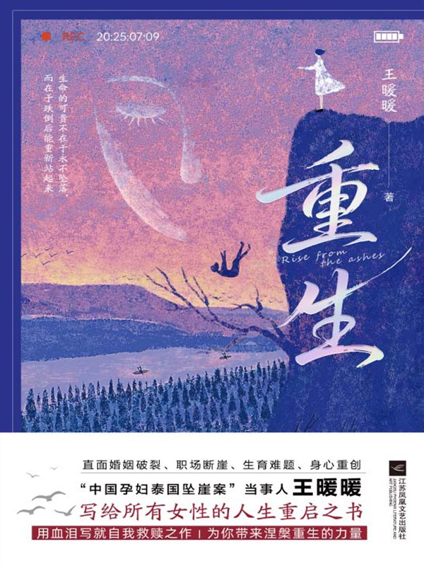

|  |
重生 |
第一章 坠落悬崖
他叫俞晓冬，我们是在泰国的一次朋友互助会上认识的。由于在场的都是夫妻，成双成对，只有我俩是单身，所以我俩互加了微信。当时，我已经实现环球旅行的梦想，又花两亿泰铢买了一艘大游轮，游轮在湄南河上行驶，划破碧波万顷，天大地大，显得我一个人更加孤单。后来，我去市中心的四面佛前许愿，希望能让我得遇良人，缔结姻缘。几个月后，我遇见他，我以为那是命运馈赠的缘分，却不知早已落入精心设计的圈套。
他从背后抱着我，双手温柔地环住我隆起的腹部，然后轻轻地亲吻我的右脸。天已大亮，厚厚的云层罩住天空，不见太阳的踪影，整片悬崖浸在冷白的光里。他的手臂环在腰间，体温透过衣料传来真实的暖意。突然之间，他松开我，我还来不及反应，方才温柔的环抱之力已变成肩头强烈的推力，紧接着，耳畔响起一句恶狠狠的宣判：
“你去死吧！”
从悬崖底下醒来后，除了坠崖前的那个画面，我脑海中还浮现出另一个场景：因为早上要赶来看日出，我们决定简单地吃碗泡面当早餐。俞晓冬选的是市面上不常见的口味，而我选的是经典口味。面泡好后，俞晓冬刚吃一口就皱眉吐掉，然后失望地摇摇头，将那碗面全部倒掉。我见状把我的面推到他面前，说：“我不太饿，你吃吧。”俞晓冬没有多言，径直将我的面一扫而光。此刻想起这个细节，我感觉心脏像被利刃反复穿刺。没想到，当我挺着孕肚让出早餐时，他早已谋划着要杀死我和孩子！那碗热气腾腾的泡面，现在想来如此讽刺——在他精心计算着谋杀时机时，我竟还在担忧他空腹看日出。多么荒谬啊！我把我和宝宝的口粮都让给了他，却未能唤醒他心中的一丝良知。
一边是被丈夫谋杀的凄惨命运，一边是注定死亡的悲惨结局。心灰意冷的我，又闻到身上的血腥气，于是不由得想，这股血腥气会不会已经被那些潜伏在旁边原始森林的野生动物捕捉到了？小时候我很喜欢看《动物世界》，我知道，原始森林的动物天生会猎食，会循着血迹找寻猎物，找到猎物后，它们会选择撕开猎物的肚皮先吞食内脏。
我忽然想起，看完日出，我们坐在悬崖上，俞晓冬陪我聊天时，问了我一个问题：
“你这辈子有没有什么遗憾？”
我能有什么遗憾呢？我的家庭，我的事业，所有的一切都是非常美满的，我还即将要当妈妈了。用朋友的话来形容我：你的生活，我的梦。我想，我的人生是没有遗憾的。
于是，我坚定地回答他：“我没有什么遗憾。”
但是，当我即将跟这个世界说再见，没有任何机会、没有任何时间再去做任何事情的时候，我才发现，我有太多太多的遗憾。
我遗憾从来没有好好地陪过父母，甚至没有带他们一起旅行过；我遗憾没能在工作之余和朋友闺密们相聚，一起回忆美好，分享成长。我以前总是觉得来日方长，然而事到如今，我却要这样远离他们，甚至来不及道别，从此阴阳两隔。
第二章 命悬一线
1
从绝望地躺在崖底，再到被好几个人围着，那一瞬间，我能感觉到我的命运发生了180度的大反转，我看到了生的希望。
我的心里有了强烈的求生欲，我希望他们赶紧把我捞上去，把我送进医院。然而，疼痛的知觉也是从这个时候开始的。蚀骨的疼痛从身体的四面八方向我袭来，连睁眼睛都是痛的。他们想把我抬上担架，有人抬我的胳膊，有人抬我的腿，但无论是胳膊还是腿，他们根本抬不起来，因为我浑身上下的骨头都断了，就像一摊烂泥。
他们好不容易把我弄上担架，我左边站着三个人，右边站着三个人，六个人一起抬着我走在山路上。山路不是很好走，蜿蜒曲折，我的身体跟着担架颠上颠下，浑身仿佛散了架一样，那种疼，真是一分一秒都难以承受。
我以前听别人说过，人的神经麻痹是有时间限制的。我在崖底躺了四五十分钟，救援队找到我又花了四五十分钟，差不多两个小时，刚好过了那个临界点，我的痛觉神经彻底苏醒。
断掉的骨头就像一把把尖刀，把我的身体扎出了无数个窟窿，血液流出来，最后形成了无数个伤口。本来已经凝固的伤口，随着颠簸开始崩裂，像一座座活火山在我身上复活，岩浆般的血开始涌出，撕心裂肺地疼。
救护车鸣着笛在山路上行驶。泰国边境的这条路，很像我国二十世纪五六十年代的农村土路，路面铺满了大小不一的石子，坑坑洼洼的。汽车轮胎在这样的路面上行驶，不断颠簸，我的身体也随着上下颠簸。轮胎每转动一圈，我浑身上下所有的伤口便仿佛同时被撕扯，疼痛交织在一起，变得异常剧烈。那种痛楚钻心刺骨，简直难以忍受，就像是全身每一根血管、每一条神经里都在集体发作结石般的痛。因为疼痛，我一直在掉眼泪，泪水混合着血水，导致我的世界变成了红色。
红色的护士，红色的“白”大褂，红色的救护车后门紧紧关闭，红色的针头，还有一双时隐时现的红眼珠。我不敢细看那双眼，生怕是俞晓冬躲在后面盯着我。
救护车在那坑洼不平的路上颠簸了四十分钟，感觉漫长得像过了四年。好不容易熬到最近的救护站，结果救护站的大夫却摆摆手说：“治不了，伤情太重了，必须转到大医院。”
他们把我抬进去，没有做任何救助和治疗，连片止痛药都没给，又把我原样抬出来塞回救护车。我心里在喊，救命啊！我不想转院，因为不知道从救护站到最近的医院，还要再开多久。我受不了在路上颠簸时伤口撕裂般的疼痛。那种疼痛就像在凌迟一般，堪比古代十大酷刑，对我而言实在太残忍了！
救护车上的护士一路照顾我，她长得干瘦干瘦的，手指细如竹节，她简单地将我有伤口的地方贴一块纱布，却没有包扎，我明白这是常规流程，主要是怕伤口暴露引发感染。
我右眼的上眼皮没了，是被树枝和地面刮掉的，眼睛下面的肉也被刮掉了，要是再刮掉一些，眼球也就没了。女护士用一块很大的纱布才能把我的右眼盖住，我的面前随即黑了一大半。我全身上下，能用夹板固定的地方都用夹板简单固定住了。我只有左眼能动，更确切地说，是眼皮能闭合，眼珠能转动，但几乎无法表达任何情绪和想法。
大约一小时后，我被送进乌汶府最大的医院。躺在人流穿梭的门诊大厅里，我的气息微弱至极，一直在叠加的疼痛击溃了我，疼到绝望，疼到无法忍受。我努力向抢救人员表达着想要安乐死的诉求，可无论我怎么说，也说不清楚。
僵持了几分钟，抢救人员才大概明白了我的意思。如果他们答应，我会毫不犹豫地签字。我真的熬不过去了，那种百爪挠心、蚀骨钻心般的疼痛，我是多一秒都不能忍受了，给我注射一针安乐死药剂，好让我停止这种疼痛和折磨。
但他们不同意，所有抢救人员都不同意，其中一个护士表现得相当决绝，从她的身体语言来看，她是能理解我的疼痛的。她怜悯地看着我的肚子，刹那间有一些走神，想来她也是一个孩子的母亲吧！
2
就在这时候，我看见了俞晓冬。
他一路尾随我来到了这里，警察看他鬼鬼祟祟的，上前盘问。起初他还装作看热闹的路人，当警察发现他不会泰语，要查看他的护照时，不得已，他只好承认是我丈夫。他是被工作人员从门外喊进来的，对方示意他进来安抚我的情绪。他被喊进来以后，站在离我床位四五米远的地方看着我，迟迟不敢走近我，停顿了大概半分钟。我们互相盯着对方，彼此脸上都写满了错愕与震惊。一瞬间空气仿佛凝固了，突然，他提高嗓门，夸张地喊道：“老婆你去哪里了？我找你也找不到，我急死了。”
我瞬间怒火中烧，用尽全身力气反复嘶喊：“你为什么要这样对我？！”经过一路颠簸，喉咙里淤积的血终于咽下，我又能出声了。
俞晓冬听到我的反驳，整个人僵在原地，脸上交织着震惊、恐惧与错愕。他瞪大眼睛，活像见了鬼——显然，他没料到我能开口说话。其实他刚刚那句“老婆你去哪里了”的关切，不过是演给旁人看的戏码，他根本没指望得到我的回应。
不过，他反应极快，迅速调整好自己，三步并作两步走到我的床边，蹲下身凑近我的耳边，低声跟我说：“你闭嘴！不要乱叫，这里没有人听得懂中文。刚才事情发生的时候没有人看见，也没有监控，如果你继续大喊大叫，等会儿我看没有人的时候我就弄死你！”
我如同被封印在石膏中的木乃伊，僵卧在ICU（重症监护室）的VIP病房里。麻药劲还没过，浑身上下一点知觉都没有。我缓缓转动眼球，观察着周围。我发现自己戴着氧气面罩，浑身插满了管子，就跟恐怖电影中的异形似的。余光中，我看见两个女护士坐在床的这一边，她们见我醒了，便围了上来。她们说的是泰语，我只能听出个大概。她们说，手术做了11个小时，而且非常成功，体内的断骨接了一半，气管和脏器内的瘀血也被清除，最重要的一点是，孩子保住了。
俞晓冬转过身时，一个可怕的念头击中了我：这是一个单独的病房，病房里没有监控，而俞晓冬可以24小时陪伴我。说是陪伴，其实就是监视，他练过泰拳，又经常健身，健硕的身体可以让他做到不吃不喝不睡。关键是这个ICU跟国内的不一样，国内的重症监护室周围全是玻璃，方便医护人员从外面透视观察。可这里的病房上半截是玻璃窗户，下面差不多有一人高，全部都是木头围挡，有很大的视线盲区。
ICU VIP里只剩下我和俞晓冬。他死死地盯着我，突然俯身逼近，我吓得想躲，可根本动弹不了。他的眼神一下子变得特别凶狠，让我想起推我掉下悬崖时的那张脸。
“你记住！”他咬着牙说，“你是自己头晕掉下去的。无论谁问，你都要说，你是自己掉下去的。我跟警方和媒体都是这么说的。如果你敢和我说的不一样，我就弄死你。”
“好……”我艰难地挤出回应，声音细若蚊蚋。这不是屈服，而是重伤之下的权宜之计。
我刚刚做完大手术，精气神受损，身体虚弱不堪，非常乏累，但我不敢真正入睡。我像只惊弓之鸟，只要俞晓冬稍有动静，我立刻绷紧神经。因为我担心他走火入魔，对我下死手。他此刻要杀我易如反掌：一个枕头，或者拔掉氧气管，都能让我悄无声息地“意外死亡”。
3
幽闭狭窄的病房，就像薛定谔眼中的盒子，而我是盒子里的猫。如果薛定谔站在盒子外面观察盒子里的我，在没有打开盒子的情况下，我既是生的也是死的，我处在这种叠加态里，或生或死都在俞晓冬的一念之间。他在病房的透明玻璃前踱步，不停观察走廊的护士和医生，他在经历人生最大的一次赌博，他要杀死我，必须在视线盲区内，他赌别人看不见。
赌赢了，他就可以继承我所有的遗产，过几年挥金如土的好日子；赌输了，他的后半辈子就只能在牢里度过，或者被判死刑。多年的商场经验让我对人性有着清醒的认知，我告诉自己，我能做的就是在他去往赌场的路上，在他孤注一掷的途中，把他拉回来。
首先，我要争取他的信任。在这个特殊的时刻，所谓的信任是求饶。我向他求饶，跟他保证，再三保证：“我不会报警，而且我会原谅你，你想让我跟警察说什么，我就跟警察说什么，你想让我说我是自己掉下去的，我就说我是自己掉下去的。”
其次，在这个要命的时刻，我必须尝试换位思考，是的，该死的换位，我要站在凶手的角度上思考问题。一个凶手现在想要的应该是行凶后的心理慰藉，他需要一个可以下的台阶。于是，我跟他说：“我觉得你可能也是一时冲动，才对我这么做的，毕竟我们现在有孩子了，以后孩子还是需要一个完整的家啊。如果我把你弄进去了，我也没办法跟孩子交代，我说什么，我说孩子啊，你爸是被我亲手送到牢里面的，因为他要杀你的妈妈。”
俞晓冬见我服了软，只是微微一笑，就转过身走到透明玻璃前，继续观察走廊。他时不时抬腕看表，像特工一样记录着走廊里人流的走向和护士的状态，他应该是在寻找时间的缝隙吧。
时间的缝隙，就是下手的时机。
我一动都不能动，只能默默躺在床上。我在祈祷：老天爷呀，让我动起来吧。
我的眼球扫向右半边身体，微光中飘浮着灰尘，清晰得粒粒可见。我怔住了，因为我看见我的右手食指在床单上有节奏地敲打着，手指敲打床单，激起了灰尘。我使出吃奶的力气，想要多恢复几根手指，可任凭我怎么努力，还是只有食指能动。
一只眼睛，一根手指，这是此刻的我能拿上台面的所有筹码。
有那么一瞬，我恍惚看见俞晓冬窜过来，拿起枕头捂住我的脸。我浑身一动也不能动，只有一根手指在拼命抖动。灰尘，更多的灰尘在我的上空急速荡起，而后慢慢归于平静。
哦，是我走神了。真正向我走来的是护士，护士后面跟着一个手持POS机的男人，原来是院方要我缴纳住院费和手术费。俞晓冬在我的包里找到了我的银行卡，他们让我在POS机上输入银行卡密码。原以为右手食指的恢复是为了抵抗俞晓冬的攻击，可老天爷却跟我开了一个天大的玩笑——它不是用来抵抗攻击的，而是用来输入银行卡密码的。
当我用唯一能动的食指输入密码的那一刻，内心涌起一阵巨大的悲凉——即便刚刚经历了生死浩劫，醒来后依然要面对这个充满金钱交易的现实世界。万一我银行卡上余额不足呢？万一我连一根手指都无法动弹呢？万一我坠崖导致头部受伤，意识模糊不清呢？只要这三种情况中的任何一种发生，我都可能无法获得及时的救助，甚至会被医院拒之门外。泰国的医疗体系不同于我国的“先救治，后结算”模式，一想到如果那一刻我无法结账，可能会被赶出医院，喉咙突然发紧，一股无尽的悲凉在我心中蔓延开来。即便我经历了那么大的背叛与伤害，这个世界对我依旧是那么残酷无情。
4
当天下午，俞晓冬向医院提出转院申请，医院直接驳回了他的请求。医院不放，他就强行带我走。他直接打电话给曼谷的一个私立医院，要求对方从曼谷开一辆救护车到边境乌汶，为此他预付了一万多元人民币。救护车开了十几个小时到达乌汶，司机给俞晓冬打电话，说：“救护车已经到医院门口了，你可以把人送过来，我们把她带回曼谷。”
俞晓冬拔掉我身上所有用来监护体征的仪器，包括氧气面罩、导尿管和引流管。由于我睡的病床是可以直通手术室的，病床底下带着滚轮，他就推着移动的病床强行往医院外面闯。
他的手搭在病床围栏上，掷地有声地对俞晓冬说：“患者不能出院，无论你讲什么都不能出院，即便你已经把曼谷的救护车花钱调过来了，即便你愿意在出院申请书上面，自己签后果自负，我们还是不能放她走。因为她是一条生命，从医学的角度判断，她现在出院，伤口暴发大量的感染可能会引发免疫系统的问题，她会死的，我们不能眼睁睁地看着一条鲜活的生命死去。”
俞晓冬的手伸进裤兜，我知道他在犹豫。如果枪在裤兜里，他掏出枪，那么事件性质就会由强行带老婆出院转变为持枪劫持人质，到时候警察会出现，狙击手也会出现。
救护车从曼谷出发之前，俞晓冬已经把车费打过去了，相当于曼谷的医院已经收到车马费了。救护车到了乌汶，却迟迟接不到人，司机和随车护士给俞晓冬打了好几次电话，问走不走，不走他们就回程了，因为救护车还要给别的病人用。司机最后一次跟俞晓冬沟通后，没有经过俞晓冬的同意，直接开车回曼谷了。
5
我得想个办法，得找个人证。我希望有第三方人证，证明俞晓冬是蓄意谋杀，或者用手机录下他对我的威胁。可我浑身上下没有一个地方是好的，骨头碎的碎，断的断，所有指甲盖全被掀起来了，就剩一只眼珠和一根手指能动。别说拿手机了，我连抬胳膊的力气都没有，怎么有办法自己拿着手机去录音？更糟的是，我的手机根本不在身边，在俞晓冬那儿！因为，去帕登悬崖看日出那会儿，我把手机落车上了。当时让俞晓冬开门拿，他说：“我们就去一会儿，看完就回来了。”现在想想，这分明是掐断我求救的后路啊！
得找个人帮忙录音才行……这样想着，突然，我脑子里闪过一个人的名字。
乌汶的热带季风彻底消隐后，我瞅准一个时间点。大概是日落前，晚霞染红了整个西部天空，霞光经ICU对面的窗户折射进来，我跟俞晓冬说：“不如这样吧！事情既然已经发生了，我答应不举报你，不揭发你，我也答应跟你回中国好好过日子，但你要给我一个承诺。承诺你以后不会再对我做同样的事情，不会再伤害我和孩子。”
霞光散去，灯光亮起。我和俞晓冬选出了两个人，一个是他的妈妈陆慧芳，另一个是我们共同的好朋友——武元先生。经过大概一个小时的谈判，俞晓冬同意让他的妈妈陆慧芳以及我们共同的朋友武元来听他立誓。
其实，我说的承诺不追究这件事是假的，我怎么可能原谅杀人犯呢？我是希望我的朋友武元飞来泰国，帮我录音取证。
“我只能跟一个人立誓，我只相信我妈妈，别的人我不相信。”俞晓冬说。
俞晓冬的妈妈向来护犊子，如果只是他妈妈来，肯定不会站在我这边，我也无法取证。我得想办法说服俞晓冬，让他同意朋友一起来。
“你妈妈年纪大了，她能一个人先飞曼谷，再从曼谷转机来乌汶吗？再说了，入境的话要填很多资料，都是英文和泰文的，你妈妈能不能看得懂？”我循循善诱。
“看不懂。”他说。
“那就需要一个人来带她呀。”我顺水推舟。
俞晓冬最终还是答应，让武元飞来泰国，但是角色有所改变，武元不再是见证俞晓冬立誓的证人，而是陆慧芳的护送者。在这种事情上，我还是比较了解俞晓冬的。他心疼他妈陆慧芳，他觉得他妈过来没有人护送，一个老太太坐飞机出国，先到曼谷又要到乌汶，她可能搞不定入关和转机的事情。出于这个考虑，他才同意武元护送他妈来泰国，只不过护送完毕，武元就得打道回府。
第三章 斗智斗勇
1
陆慧芳站在门口，离我远远的，仿佛我身上带着什么病毒似的。
“哎呀，不就是骨折嘛！谁没骨折过呀，两三个月就好了，没事，养一养。”她以一个久病成医的过来人的口吻，异常冷静地评价道，眼神里全是疏离，不见半分关切。
我原以为我们婆媳关系还算不错——我给她买房子，定期给她的银行卡打钱，对她足够好，平时两人见面相处也蛮好。可事到临头才明白，翻脸不过是一瞬间的事。我的脑袋里不停地闪现出最近见到的不同面孔，哪怕素不相识的陌生人，看到我浑身插满管子躺在病床上，都会流露出心疼与怜悯。而陆慧芳，她连人类最基本的共情能力都丧失了。
2
俞晓冬一直提防着武元，拉着他同进同出，上厕所都叫着武元，不给我任何和武元单独相处的机会。
我的状态稳定后，护士就走了，ICU重归寂静。陆慧芳开始坐不住了，她不停对俞晓冬说：“儿子你吃点饭啊，儿子你睡一会儿吧，儿子你不要这样子，你这样子不吃不喝不睡的话，要把身体搞坏了呀……”她端着医院给我发的粥，拿个勺子说：“儿子来喝点粥吧。”说着她又把粥喂到她儿子嘴边，“你吃两口啊，不然身体会垮的呀。”
紧接着，我又听见陆慧芳说：“儿子你要不找个旅馆睡一会儿吧，你看你眼睛都红了，人不睡不行的呀！”
俞晓冬拒绝了陆慧芳的提议，继续不吃不喝不睡，死死地守着病房，一步也不离开。我们就这样相互熬着，直到深夜十一点多，事情终于出现了转机。
整整九个多小时，陆慧芳眼睁睁看着儿子滴水未进、双眼通红，她也跟着不吃不喝不睡，头发凌乱。她有些神经质地开始念叨：“一定要给儿子补充营养”，“必须让儿子睡一会儿”。她围着儿子打转，突然说要去找超市：“得买牛奶、三明治……还得买点肉，买点补品，没有营养身体会垮掉的。”
俞晓冬一把拉住陆慧芳，说：“你不认识路，也不会说泰语，走丢了怎么办？”
陆慧芳执意要俞晓冬陪她去。可俞晓冬哪敢离开？他既要死死盯着我，又要看紧武元。但邪就邪在哪里呢？陆慧芳是真心疼儿子，生怕他身体垮掉。
她一个劲地说：“我一个老太太，哪怕不会说泰国话，哪怕不认识路，哪怕看不懂价格，也要出去给你找吃的。”
俞晓冬权衡再三，突然拽起武元：“走，一起去超市。”眼看武元跟着俞晓冬站起身，我的心瞬间沉到谷底——俞晓冬的阴谋又要得逞了。
不过，陆慧芳去超市给儿子买食物的态度也非常坚决，她见俞晓冬很磨蹭，干脆甩开俞晓冬，独自一人走出ICU。
俞晓冬一看陆慧芳自己走出病房，想追过去可又放心不下武元，继续劝说武元：“你跟我们一起走吧。”
“我真不饿，之前已经吃过飞机餐了。”武元回绝道，然后一屁股坐了回来。
也许他是真不饿，也许他不想把我单独留在病房里，他再次坚决地拒绝了俞晓冬。
武元是那种一旦想做一件事，九头牛都拉不回来的人，俞晓冬也知道武元的为人。何况，比起拉走武元，现在于他而言，更重要的是去追陆慧芳。毕竟陆慧芳不会泰语不会英文，在外面人生地不熟的，面对一帮泰国人，再遇到什么摩托车飞车党，万一出现什么问题怎么办？
3
我十万火急地、一刻也不停地说着这些话，我担心俞晓冬会以最快速度返回。说完这些话，我以为他会很干脆地答应我说“好的”，但结果却不是这样的。
武元听完以后，非常震惊，张开的嘴巴还没来得及合拢，就开始微微地颤抖。他没有想到，生活中那么熟悉的人居然是一个杀人犯，竟对自己的妻儿痛下毒手。他跟我说话时，语调和声音都是抖的，而且嘴唇发白，瞳孔放大。
他真的害怕了，害怕得似乎已经忘记了他自己是一个一米八五的壮汉子。
他说：“俞晓冬丧心病狂，为了钱六亲不认，连你和他的骨肉都要杀，万一我在录音的过程中被他发现了，他会不会直接就把我弄死啊？我也有父母家人，我不能冒险，我太害怕了，太害怕了，我不敢这样干，我不敢，我不敢啊！”
武元还在瑟瑟发抖，不肯答应，他说：“不行，我太害怕了，我出手再快，也快不过刀枪。我要走，我要回中国，我帮你报警，我要告诉你爸你妈。”
武元的恐惧与犹豫再正常不过，任谁遇到这种事情，都难免挣扎。我清楚看见他眼底的波动，他当然会恐惧，因为他知道曾经的朋友俞晓冬已经杀红眼了。杀红眼的人基本都会陷入一个更可怕的逻辑，杀一个是杀，杀两个也是杀。而且俞晓冬身上可能有枪，枪是他在曼谷黑市花了四万块钱偷偷买的。
随着窗外的风慢慢停下来，我看到武元也渐渐变得镇定下来。这是我第一次在现实中目睹一个人做出抉择的全过程。短短几分钟内，他经历了所有黑暗情绪的撕扯，穿越了属于自己的灵魂暗夜。最终，风暴在他眼中平息，他决定走向正义。
他走近我，低声说：“行，豁出这条命，我帮你。”
4
我如他所愿，扮演着一个市井小女人的角色。我用眼神和手指传达着俞晓冬希望看到的情绪——嫉妒。只有让他确信我正嫉妒着他们母子畸形的亲密，他才会放松警惕。
这种畸形关系，早在一次旅行时就初现端倪。记得第一次带陆慧芳出游，我们特意为她单独开了房间，谁知她执意要和儿子同住。此后每次旅行，这都成为我们争吵的导火索。直到有一天，俞晓冬干脆订了三人亲子房。看着他们母子理所当然地同睡一室，我才恍然大悟：原来我嫁了个彻头彻尾的“妈宝男”。
“现在也没有外人，”我突然开口，声音划破病房的寂静，“我们聊聊这个事吧，你为什么把我推下去，你到底对我有什么不满？”
俞晓冬略显迟疑，不接话，沉默着。
武元平时就是个老实人，这个时候他能够做到的最大限度的表演，就是假装镇定，他装作不知情地看着我们。
可无论我怎么问，俞晓冬就是不说话，保持着高度警惕的状态。见状，我决定不再讲了，越讲他警惕性越高。
然而，这个时候，万万没想到，神助攻出现了。
陆慧芳听到我不断向俞晓冬问话，但是她儿子又保持沉默，她也想知道怎么了。于是，她开始问：“儿子，她刚才一直在那儿说你推她，说不是意外啊，问你打算以后怎么办，说家里人早晚要知道的，她到底在说什么？”
俞晓冬继续选择沉默。陆慧芳发扬了她打破砂锅问到底的精神，追着问：“说啊，你说说啊！”
我没想到还有这个转机，立刻跟在后面蹚浑水：“对呀，你要告诉妈妈呀，妈妈是最爱我们的人，妈妈没有什么不能接受的。我们没有理由欺骗妈妈。”
果然，俞晓冬开始动摇了。他可以跟我已读不回，但是妈妈问的问题，不能不答，如果不回答的话，就是不尊重他的妈妈。他看着陆慧芳，奇迹般地开口了，上来开门见山就是一句：“是的。”
在陆慧芳的追问和我的插话下，俞晓冬可能一时之间心智乱了分寸，也可能放松了警惕，他终于开口回答陆慧芳的问题。他俩相对而坐，陆慧芳直直地盯着他，那架势好像让他无处可躲。这个妈宝男最见不得母亲担心，既然妈妈想知道真相，他就不得不说。
他完全没意识到，在他回答母亲的同时，我们都在听着——而武元正在录音。要是俞晓冬知道武元在录音，就算刀架在他脖子上，他也绝不会吐露半个字。
然而，我们还是低估了俞晓冬的警惕心。他跟陆慧芳说话时，故意用普通话夹杂着大量江阴方言——那是我和武元完全听不懂的家乡话。
这江阴方言就跟天书似的。我和他在一起的二十三个月里，一句都没听懂过。现在只能干看着他们母子俩叽里咕噜说个没完。说到后来，陆慧芳开始用余光扫我。我猜他们八成是在说把我推下悬崖的前后经过，但陆慧芳的神情很平静，没有任何责怪俞晓冬的意思。
5
俞晓冬是个精明的人。我跟他结婚后，曾去过他的老家。有一次，婆婆陆慧芳说漏了嘴，我从中发现，俞晓冬不但精明，而且善于控制人心。
他和前妻离婚前，骗前妻签了一份担保借钱合同，然后他用担保合同借了一笔钱，在赌桌上输掉了，钱还不上，高利贷自然追上了门。他就跟前妻说，现在高利贷追上门了，如果起诉的话，我们两个人都要坐牢。现在我们俩之间只能保一个，反正我坐过牢，不怕再坐一次，不如我们俩先假离婚。
为了让他前妻相信他，俞晓冬写了一个保证书，保证他们是假离婚。离完婚以后，生活形式一切不变，他们还是生活在同一个屋檐下，谁也不离开谁，等高利贷事件平息了，他们再复婚。如果说他们要来抓人，要坐牢的话，抓他去。他前妻是个法盲，文化水平低，就被他骗了，而且她当时还非常感动，流着眼泪把婚离了。而俞晓冬认识我以后，一直跟我说，他与前妻性格不合，是自愿离婚的。所以，精明的俞晓冬是不可能将犯罪事实说出来的，何况病房里还有武元在场。当我提出要求时，他好像感觉到了不对劲。
他反问我：“之前不是说过了吗？为什么还要再说一遍？”
我有点急了，我说：“我就是想再听你说一遍才能安心，如果你不愿意给我再立一个誓言的话，我就不安心，我就不能相信你。”
不等他开口，我继续说：“这么重要的誓言听一遍是不够的。你需要再说一遍，我保证这是最后一遍，你就满足我吧。”后面我甚至开始恳求他，“我求求你了，你就再说一次吧。”
俞晓冬吃软不吃硬，我求他一回他不上当，那我就求他两回。住院两天以来，我一直在示弱，我发现，我一旦示弱，他的精神就会放松下来。为了活下去，我只能利用一切我能利用的。我就一直求，一直求，一直求他再说一遍，终于，他站起身说：“那行吧，我再说一遍。”
他对我宣誓说：“暖暖，是我不对。只要你不去举报我的话，我保证以后对你和宝宝好，我们回国以后好好过日子。”
我继续示弱，哽咽地说：“你为什么要推我？”
俞晓冬显得有些激动，他说：“暖暖，你是我认识的女人里最完美的一个。你很善良，对待工作积极努力，有经商头脑，对待家人和公婆也很好，对待朋友也很和善，对我也很好。我确实找不出你有什么缺点，你真的很完美，但如果硬要说你有什么缺点的话，就是在金钱上不能满足我。我在外面赌钱，又欠了债，你却发誓说再也不会替我还一分钱赌债。说不还就不还，一分钱都不还，做得很绝，你知道吗？既然你满足不了我，那我没办法，只能把你推下去了。”
我能感受到，在俞晓冬说这些的时候，武元害怕得要死，他害怕录音被俞晓冬发现，对方一时激动崩了他。但是他也有机智的一面，他努力帮我套话，他问俞晓冬：“你跟她离婚不行吗？”
俞晓冬说：“离婚当然不行，毕竟钱不是我挣的，离婚的话我不会分到什么钱。就算暖暖愿意给我，给的也是九牛一毛，给那几百万又有什么用呢？”
6
武元听完俞晓冬的大量陈述以后，觉得他丧心病狂，无可救药，并且他坚信俞晓冬后腰上卡的东西是枪。武元坐在椅子上，陷入高度的紧张，他也不玩手机了，注意力全部集中在我们三个人身上，特别是俞晓冬。俞晓冬只要动一下，武元都会本能地挪动一下凳子，或者是下意识地站起来，朝远离俞晓冬的方向挪两步。
恐惧还具有传染性，武元的肢体语言已将恐惧表现得极为明显，达到了几乎无法掩饰的地步。倘若他的这种状态持续下去，以俞晓冬敏锐的观察力，识破真相只是时间早晚的问题。一旦被俞晓冬看破，武元极有可能在压力下被迫承认录音的事情。而一旦录音被删除或被收回，我们之前的所有努力都将付诸东流，我再也不可能有任何机会获取这份关键证据了。
时间开始过得缓慢，漫长的一秒过后是下一个漫长的一秒，我觉得空气都凝固了。我不敢看俞晓冬，只是偶尔用左眼的余光朝他的方向扫一下，他稳稳坐在床尾的椅子上，看样子没有离开的打算。因为之前的几天，他从来没有离开过ICU VIP，无论是白天还是黑夜，他都不曾离开。按照之前的规律，今夜他还会在这里过夜，所以我觉得我被推进了一个死局，而我已无力破局。
漫长到令人窒息的对峙，我提心吊胆，如履薄冰，生怕录音的事露馅。也不知到底熬了多久，事情终于出现了转机。陆慧芳熬不住了，她说：“太晚了，我想休息了。”说完，她又心疼儿子已经熬了好几个通宵，害怕他把身体熬坏了，于是她建议他们一起在附近找个酒店开个房间。
俞晓冬当然没同意，他跟陆慧芳说：“我不去外面住酒店，我就在这里陪着暖暖。”陆慧芳也没说什么，又坐下了。
大概过了二十分钟，陆慧芳又开口了，这回她强烈要求去开房睡觉。她说，人不睡觉是不行的，身体是会熬坏的。最后，陆慧芳拍了板，她让俞晓冬去外面开一个房间睡觉，她留下守着我。
出于对陆慧芳身体的考虑，俞晓冬第二次表示拒绝了。他提出了一个新的想法：陆慧芳先留守ICU，他和武元出去开两间房，先把武元安顿下来。然后，他和武元回到医院，他留守ICU，武元带着陆慧芳去宾馆休息。
俞晓冬的计划相当谨慎，相当于无缝衔接，既出去开了房让陆慧芳得到休息，又使得我和武元没有单独接触的机会。在长达近四个小时的僵持过程中，他应该已经觉察到有一点点不对劲了，可他没有证据，但是他不可能再给我和武元单独相处的机会，所以他就想出了这样一个两全之策。
我能说什么呢？稍不小心，不但会葬送我和孩子的性命，也会将武元推下深渊。然而，他的完美对策，却遭到了陆慧芳和武元强烈的反对。陆慧芳太心疼儿子，儿子在ICU连续“看护我”好几天了，她怕儿子身体垮掉。武元也是一万个不愿意，他不能跟俞晓冬单独出去，因为他太害怕俞晓冬了，他对俞晓冬的恐惧已经到达了顶峰状态。万一在开房路上露馅，俞晓冬把他做了呢？于是他说他晚上一般睡得很晚，他可以在这里玩玩手机，打打游戏，关键是陪陪暖暖，毕竟他第二天早上就要走了。
尽管遭遇双重反对，俞晓冬却没有放弃，他一直劝说武元跟他去开房，但武元的态度异常坚决，甚至搬出了一个不可拒绝的理由。他来泰国是来看我的，看到我变成这个样子，作为朋友，他哪还有心情去睡觉呢？
俞晓冬一听，使劲皱了皱眉头，一副纠结的样子。迫于无奈，他在陆慧芳的催促下，只好同意让武元留在病房，他带着陆慧芳去酒店安顿。
我告诉武元先把录音上传到云端，备份保存证据，即使中途被识破，手机被抢夺，但至少证据被保存了下来。继而我又嘱咐他：“你回去以后一定要想办法把江阴话翻译成普通话，把普通话翻译成英文，再把英文翻译成泰文，然后把录音证据交给警察。”
第四章 逃出生天
1
我把关键的录音证据飞鸽传书出去了，但是并没有人来找我。
在战场上，第一发子弹射出去，对面却没有任何反应，那么大概率是因为子弹没有打到敌人身上。我等啊等，住院后的第五天上午，终于把警察等来了。
按照泰国警方的办案流程，他们既然已经拿到录音证据，那么下一步的行动应该是想办法引开俞晓冬，好单独给我做笔录。我努力配合着八字胡警察，同时也用那只不敢乱转的眼睛观察着对方的一举一动，我想从他的每一个动作里读出暗示——比如暗示我支开俞晓冬或暗示我昏迷过去。可直到我把眼睛都看酸了，看得流泪了，也没有收到任何暗示。
两个警察走后，俞晓冬长舒了一口气。不知为何，我的心里生出了一种不祥的预感，空空荡荡的，就像小时候开完运动会人群散去的那种空荡，仿佛有个巨大的耳环在耳边晃动。窗外又起了风，走廊传来脚步声——有护士的，有病人的，就是没有警察的。看来，没人留下来监视我们。
看来第一计划已经失败了，我告诉自己，必须寻求第二计划。我的脑子开始飞转，第二计划怎样实施较好呢？首先，我必须找到一个会说泰语的人，然后让他帮我把消息传递出去，但是这个人是谁呢？
2
我之所以想要接触白大褂，是因为俞晓冬身上出现了一些变化。首先，武元离开泰国，俞晓冬放松了一层警惕；其次，陆慧芳留了下来，一个他信任的人在身边，他又放松了一层警惕；再次，昨天我们互相交换了誓言，他再次放松了警惕；最后，今天上午，八字胡警察找我录笔录，我也没有揭发他。几重安心的加持之下，俞晓冬不再把所有精力放在我身上，他开始翻弄我的手机。我猜他应该是在查找我的财产。有时，他还会给他的狱友和马仔发一些语音，大概意思是让他们火速赶到乌汶。
下午一点多，陆慧芳着急忙慌地闯进ICU。她说她住的酒店隔音不好，想重新换一个酒店。一般的酒店都是下午两点钟退房，为了省点钱，她想在两点前把酒店退掉。俞晓冬害怕陆慧芳因为钱着急上火，毕竟老年人的消费观念跟我们不同。于是他跟我说：“我要去帮我妈退酒店，得出去一下，马上就回来。”
我没有回答，因为我不知道白大褂是什么性格的人。他是率真的人，还是机智的人？如果他是一个率真的人，当他知道凶手是俞晓冬，他可能直接去质问或者去对质，到时我连被救的机会都没有。
3
入院第六天下午四点左右，ICU的门突然被推开。上次来做笔录的那个八字胡警察站在门口，他朝俞晓冬招了招手，说：“你出来一下，我要跟你说点事。”
俞晓冬出门没多久，走廊就传来急促的脚步声。门再次被推开，一男一女走了进来。男人个子不高，精瘦精瘦的，皮肤呈麦色，典型的泰国人长相。他身后跟着一位文静的女士，她一进病房就冲我微微一笑，整个ICU都跟着亮堂了几分。
我似乎明白了眼前发生的一切。八字胡警察故意支走俞晓冬，便衣警察趁机进入ICU。这次泰国警方一共派出三个人：穿制服的八字胡警察、便衣警察，还有一位五六十岁、穿着黄色立领T恤的阿姨。
“我叫张秀兰，负责翻译工作。”阿姨用流利的中文说道，“昨天他们听你主治医生说了个大概。坠崖背后另有隐情，不是你自己掉下去的，是有人在谋害你，但是你怎么都不肯告诉主治医生凶手是谁，你可能不信任他。”
果然，白大褂比我想的还要聪明。他没有把这件事随便告诉别人，而是选择直接报警，还一字不差地转述了我的话——“不是自己掉下去的，背后有人做的。”
俞晓冬警惕性很高，回来以后就开始怀疑了，他皱着眉冲过来问我：“刚才是不是有人来找你了？他们来干什么？”
我假装什么也不知道，就说：“刚才来的是公园方的人，说过来看看我啊！”
俞晓冬不信，他高声问：“公园的人为什么要来？”
我急中生智答道：“我也不知道啊。前两天不是也来了，还送燕窝什么的。你忘记了？”
俞晓冬冷冷地看着我，问：“他们真的没说什么？”
我继续坚持，说：“没说什么啊。”
接着我开始转移话题，我问：“刚才那个警察叫你出去干什么？”
他放松下来，答道：“说了一些不相干的话。又把之前的问题问了一遍，然后走掉了。”
俞晓冬沉默了一会儿，开始主张让他妈妈回中国去。陆慧芳不愿意，说就要和我们一起待着。她选择待在这里，照顾我是次要的，照顾俞晓冬是主要的。俞晓冬看向我的目光是阴沉的，我猜测他可能想要逃跑，但又纠结要不要把我灭口，所以他想让陆慧芳先回中国，不要在这里妨碍他。
虽然八字胡警察把他支出去没问什么新的问题，但是，俞晓冬不信我说的话，他感觉到了蹊跷。
下午五点多白大褂来到病房例行检查，他在官方的问候之中夹杂了一个动作，这个动作让我安全感爆棚。动作很简单，只是对我浅浅地点点头，但它所包含的意义太多了：他让我放心，他完成了我的重托，他谢谢我对他的信任，还有就是，一切都会好的……
俞晓冬来到床头，面对白大褂，他的目光逼人，他问：“暖暖到底什么时候才能出院？”
白大褂回了两个字：“快了。”
然而，就在下午六点多，经白大褂特批，护士毫无征兆地把我从狭小的ICU VIP调到了外面的普通ICU。相比之前的单间，这里占地巨大，灯火通明，那种感觉仿佛第一次见到大海。
4
可我还是不太明白，白大褂为何突然决定让我离开VIP病房。俞晓冬倒是十分满意地跑前跑后，像极了一个完美的丈夫。我能看清他的内在动力，因为离开ICU VIP进入普通ICU，意味着我离出院已经不远了。
普通ICU里面有十多张床位，而ICU VIP整个医院只有两间，里面住的是像我这种随时可能死去的重症病人。
ICU VIP和普通ICU，也有不同的规定：VIP病房，因为病人随时可能死亡，家属是可以24小时看护的；而普通ICU，每天只有三个时间段可以探视，即早上的六点半到七点半，中午的十一点半到十二点半，晚上的五点半到六点半。
俞晓冬走后，我迅速从病房的布局中看到了某种故意安排的迹象：我的床紧挨护士台，也就是说24小时我的旁边都有护士，有任何事情，护士都能第一时间协助我。感知到这一点，我非常安心，而且，手机也回到我身边了，安全感满满。
那一瞬间，我忽然明白了白大褂的真实用意：他把我调到公共病房，相当于有效地利用医院的规定和制度把我跟俞晓冬隔离开了，同时也在给我释放安全的信号。
警方跟我说，他们光是得到一个初步的指证没有用，需要有个口供，包括事情的来龙去脉，才能立案。我们现在要跟时间赛跑。虽然这几天经过和俞晓冬的斗智斗勇，我已经身心俱疲，但我还是靠巨大的信念支撑着，像倒豆子一样诉说我的被害经历。警方六个人各司其职，他们有的翻译，有的做笔录，有的拍照。
之前，一个偶然的契机，我从俞晓冬口中得知，他坐过牢。那时他18岁，他妈妈给他买了一辆车，有一天，一个朋友说要借他的车去厂里拖点东西。当时，他也没多想，出于好心，他晚上就开着自己的车陪他朋友走了一趟。至于他朋友去厂里到底拖什么东西，他并不知道。那个行为是抢劫，他也不知道，所以他就被动成了从犯，被判入狱十二年，最终经过减刑，八年后得以释放。
然而，警长告诉我，事实并非如此。他们联系了中国警方，拿到了当年抢劫案的档案资料，俞晓冬并非从犯，而是主犯，换言之，那起抢劫案便是他一手策划，带队完成的。另外，国内的媒体和网民也将俞晓冬的案底挖了出来，甚至有几个网络破案高手看到俞晓冬接受记者采访的视频时就已经断定他是凶手。
5
原来，在我不知道的情况下，我的父母已经飞到了泰国。
本来我不希望父母为我担心，叮嘱过武元不要把此事告诉我父母，但没想到他还是没忍住。武元离开后乘坐下午的飞机，从乌汶飞到曼谷，又从曼谷飞回南京。到达南京已是凌晨一点多了，武元没有回家，而是从南京机场直奔我父母家，他把一切和盘托出。我的父母听完后，请武元赶紧帮他们买机票，他们要来泰国看我。当天晚上，他们就订了来乌汶的机票，也就是第二天最早班的飞机，从南京飞曼谷，又从曼谷飞乌汶。
他们因为担心女儿，熬夜航一路飞了十几个小时，转机到了乌汶。到乌汶后，他们先到警署了解了案件的情况，然后就强烈要求到医院见我，他们要看女儿怎么样了，但被警长拦了下来。警长帮他们安排了酒店休息，他们求人家要来见我。可警长却说，现在他们去医院就可能打草惊蛇。俞晓冬一旦逃回中国，泰国警方无权跨国追捕。
父母问：“那什么时候能见女儿？”
警长说：“我们正在申请逮捕令，把俞晓冬逮捕以后，你们就能见到女儿了，这也是为了你们的安全起见。”
住院第九天，中午十一点半到十二点半，俞晓冬和陆慧芳照例来探视我，他们维持着模范家属的假象，一个扮慈祥婆婆，一个演体贴丈夫。我闭上眼睛，将他们彻底隔离在我的世界之外，直到我听见一些轻微的脚步声。我睁开眼睛，看见两个穿着便装的男人走了进来，他们手里拎着水果，就像两个探望病人的家属朝我的病床走来。他们走到俞晓冬身后，电光石火间，他们扔掉水果篮子，一个人突然抓住俞晓冬的右手，快步上前用双臂锁住俞晓冬的右臂，向后一压；另外一个人则抓住俞晓冬的左臂，向后一别。眨眼间，两个人已合力制服俞晓冬，把他按倒在地。
俞晓冬似乎从我的眼神里读懂了什么，突然扭头对陆慧芳喊道：“泰国是可以保释的！快帮我去交保释金！”
6
后来，警察跟我说，因为陆慧芳强烈要求跟着她儿子，所以就把陆慧芳跟她儿子一起关到押解车带到警局去了。
这种奇妙的氛围一直持续到晚上。留守在医院的警察告诉我，陆慧芳帮俞晓冬交了十万的保释金。我不免有些担忧起来，陆慧芳初来泰国，她从哪里弄到十万块钱，而且能在第一时间内交了保释金，背后到底发生了什么？
我突然想起住院后，俞晓冬跟我说，他要拿点现金用。当时我处于保命阶段也没办法，只好乖乖地把我的泰国银行卡给他，并告诉他密码，嘱咐他不要多取，取个五万铢就行了。当时我们没有撕破脸，他跟我要钱交房费和住院费，我只能给他。但他取完钱后，并没有把卡还给我。那么，陆慧芳是不是用我银行卡里的钱去交的保释金呢？
这么一想，我赶紧让我妈帮我翻看手机短信确认，这才发现开泰银行给我发过提示信息：我的银行卡里被取走了五十万泰铢，也就是十万人民币。这也就确认了陆慧芳为俞晓冬交的保释金是从我银行卡上划拉的。看来，俞晓冬应该是在和陆慧芳待在囚车上时，把我的泰国银行卡和密码给了陆慧芳。
泰国法律规定，当事人在一周内交纳保释金有权进行保释，这意味着俞晓冬最迟三天就可以从警局看守所大摇大摆地走出来，活蹦乱跳地出现在我的面前。
警察告诉我，他们的警长禅猜以警长的名义签了一个反保释协议，也就是说，在法院宣判之前，俞晓冬只能在拘留所，不能被保释。我的脑海里再次浮现出警长那双如灯一般的眼睛，还有他为了安慰我说过的话：迷则乐境成苦海，如水凝为冰；悟则苦海为乐境，犹冰涣作水。这一刻，我才理解它的真正含义，是的，冰可以化为水，前提是要把苦海当成乐境。我在苦海里游啊游，却一直无法上岸，直到很多双手同时抓住了我：我的主治医生白大褂，所有护士，所有警察，秀兰阿姨，当然还有亲爱的警长禅猜和朋友武元。
秀兰阿姨告诉我，武元递交的录音已经翻译完了，可以作为证据在庭审上使用。录音里，俞晓冬和陆慧芳用江阴话描述了从推我下去到发现我并开着车跟我到医院的完整经过，他故意杀人的动机有三个：第一，我没有帮俞晓冬还全部的赌债；第二，我给俞晓冬买的豪车没有借给他的亲戚使用，让他妈妈丢面子了；第三，我给他缴纳医保的钱，被他挪用去赌博，导致医保卡断缴，陆慧芳无法使用医保卡买东西。陆慧芳听到事情经过后没有责怪他的意思，让我们以后好好过日子。
第五章 平行世界
1
蹦极成功，就像通关了人生某个隐藏副本——我带着这份勇气，在朋友的支持下开启了泰国创业的第一个项目：杧果干跨境生意。通俗点说，就是在本地加工杧果干，然后把它卖到国内。我从当地种植散户手里采购杧果，运到仓库，等待加工厂排期。加工厂会根据订单顺序，安排加工日期。可是，那一阵泰国持续高温，外加我经验不足，等排到我们加工的日子，仓库里的杧果大部分已经腐烂。加工完成后，我只得到了极少的杧果干。第一次创业，我损失掉二十万，几乎赔光了全部创业资金。
我把杧果干按订单包装完毕，一共126份快递，然后一份一份填好面单发出去，用了五个多小时。订单发完，我一屁股坐在仓库的水泥地上，又渴又饿，我无奈地笑着。在曼谷的街头，我用仅剩的钱买了一桶泡面，坐在街边的马路牙子上，一边吃泡面，一边茫然地看着熙来攘往的人群。赔了个底朝天，连饭都要吃不上了，我想起了蹦极时坠落的一瞬。从豪情万丈一下子坠落到一无所有，一个是蹦极，一个是创业，居然在不同时空里给了我相同的感觉。
到了第二天傍晚，我还在摆烂，没有吃的，也没有钱，肚子饿得咕咕响。不想出去也不想求助别人，我就撑着，看自己到底能撑到什么时候。电话突然响了，是朋友打来的，她和另一位朋友在我家附近吃饭，问我愿不愿意作陪，有个项目要聊，看我感不感兴趣。
“我愿意。”我急忙应道。项目不项目的这会儿并不重要，填饱肚子最重要。
朋友聊的项目非常靠谱，是个成熟的外贸项目，有成熟的渠道。朋友已经控股，我可以选择资金入股也可以选择技术入股。技术入股，我只要肯付出辛苦付出努力，就可以拿到不错的分成，简直就是天上掉馅饼。吃饱喝足，我的脑子开始飞速运转，又不可置信地看着朋友，甚至不敢相信有这么好的事。
“辛苦算什么！只要努力就行了吗？”
“当然。”朋友再三确认。
我悄悄拧了几下自己的大腿，疼，不是在做梦。
在朋友的帮助下，我做起了外贸生意。吃苦是我最不怕的，我不断地见客户讲项目，讲到喉咙沙哑，讲到嗓子疼得不行。我一边吃润喉片，一边还在跟客户沟通，客户显然被我“拼命三姐”的精神镇住了。我开始不停地签订单，累到一天只能睡三四个小时，早上一睁开眼，就出去跑客户。为了提高自己的泰语水平，我报了当地最好的泰语学校，几乎每天晚上都去上课。
我经常去看唐人街上豪华亮堂的公寓，夏至时节，太阳升得早，整个公寓的顶层，亮晃晃的。几个月后，我也成了这里的一分子，住在亮晃晃的公寓里，看着湄南河在脚下奔腾流淌。我开始实现环球旅行的梦想，我去了意大利、挪威、日本、丹麦、菲律宾、马来西亚、瑞典、瑞士、德国、法国。回到曼谷，我去了市中心的四面佛许愿，希望能让我得遇良人，缔结姻缘。三炷香即将燃尽，香灰缓缓落下，我的身体从悬崖上再度坠落……
2
看海归来，俞晓冬每天早上都会准时敲门，给我送来各种各样的早餐。有需要花费的地方，他基本上都是跟我抢着买单。我对他越来越认可，我身边的朋友也对他印象很好，都说他是一个非常细心而且又懂得察言观色的人。他也很自律，每天准时去健身；对事业也很积极，在不停地考察泰国的项目。
他表现的这些都是我喜欢的：精神状态积极向上，非常阳光，自律，温文尔雅，经济独立。
然而，有一天，我们吃完早餐，俞晓冬直勾勾地看着我，他向我坦白，他曾有过短暂婚史，是父母的催促和现实的无奈逼迫他结了婚。他的婚姻生活并不幸福，最终他和前妻因感情不和，自愿离婚。他们有一个孩子，抚养权归前妻。
朋友说，俞晓冬第一次见我之前就打听过我，问我生意做得多大，有多少钱。
我才恍然大悟，原来我早已成为俞晓冬的目标，就像森林中猎人眼里的猎物。那便不难理解为什么有这么多巧合，他是做了功课的。我最近三年的微信朋友圈是开放的，我想过什么说过什么，他完全有可能研究个透。
3
我们从海边回到曼谷后，俞晓冬从早到晚，只要一有机会，就会抓住时间，跟我求婚。我拒绝了，他就再求，连送我出门的时候，都会跟我说：“亲爱的，请你嫁给我，我愿意为你付出一切。”
幸福来得太突然，我的大脑根本来不及思考，整个人都是蒙的。有一天，我一不小心，就随口答应了他。那时距离我们恋爱，才刚刚过去两个月。
那天，我忙完生意回到家，俞晓冬突然把手机举到我面前：“看，机票订好了。我们明天回国领证。”
回国后，我没有回家，而是带着他住进酒店，又约了一些朋友和老同学吃饭。吃饭时，我们聊起了非典时期的事情。当时别的学校都放假了，就我们学校不放假，我们只能每天挤公交去上学。还说起上学时一起追《流星花园》的趣事。俞晓冬平时很健谈，但那天却一直在低着头吃饭，好像毫不知晓，我感到很奇怪。难道那段时间他过上了与世隔绝的生活？
聚餐结束后，我问他：“哥，你那段时间是不是当兵去了？”
他说：“跟当兵差不多。”
这勾起了我的好奇心，我追问：“那是在海上，你去当海员了？”
他说：“不是，你就不要再猜了。”
我一直想，也没有想明白。刹那间，一个念头从我脑海里划过，我开玩笑地问他：“你总不会是坐牢去了吧？”
几天后，我们回到了泰国。领证后的生活每天都很甜蜜，我们被身边的朋友称为高糖夫妻，平时走路都是两人拐着走的，时不时会亲一下，要多腻歪有多腻歪。俞晓冬几乎成了我的贴身管家，为了方便我谈业务，他给我开车，一日三餐也会为我准备好，生活上几乎不用我操心，我只要专心搞生意就行了。
我的生意做得越发风生水起。我有一个贸易公司，一个民宿酒店，一整栋楼的民宿生意红火，新开的一家中餐馆生意也不错，还在美丽的湄南河上拥有一艘游轮。我一个人要管很多东西，每天忙得连妆都不化，有时候早上出门皮筋没有拿，头发要散一整天，因为我根本没空找皮筋。
我的事业如日中天，俞晓冬的项目考察却一无所获。
我当时没计较，可是后来欠款从五万到十万再到二十万，慢慢地一直叠加到五十万、一百万。我算是看明白了，我被他套路了，但是做生意多年，我习惯发现问题，找到解决问题的办法。
我决定改变方法，我就跟他说：“外面欠的那些钱，你一定要还给别人，不可以不还，这样，我帮你还五十万，另外五十万你自己工作挣钱还。但是你不可以再去欠，而且你不可以一直游手好闲，你要去工作，我会提供资源给你，我会帮助你挣钱。”我不断地跟他说赚钱的办法，每次找他谈心，他就会表示发愤图强，看到他没有抗拒，反而是表决心，我觉得还有救。
于是，我把中餐馆交给他打理，说好每个月给他两万块钱作为管理费。但是，他每天到中餐馆后，就像个闲人一样坐在那里打游戏。反正中餐馆的生意很好，我忙得无暇顾及他。
有一天，餐馆特别忙，我帮忙端菜时不小心踩空，从楼梯上摔了下来。当时俞晓冬正在打游戏，听到动静后，只是抬头瞥了我一眼，接着就低头继续玩游戏。
那一刻，我既震惊又心寒——婚前信誓旦旦的承诺，什么“只要你嫁给我，我一定会让你幸福”，现在看来全是空话。他根本不在乎我！
最后还是店员扶我起来，陪我去医院处理伤口。回家后，我实在气不过，找他理论。他解释说，他以为我没什么事，加上游戏正打到激烈处，抽不开身。尽管满腹委屈，可面对我的指责，他并没有反驳，反而认错道歉，保证以后绝不会再犯，一定会好好照顾我。最终，我还是选择了原谅。
结婚第二年，我终于走进俞晓冬在江阴的家。他们家很穷，他爸爸这一辈子都不上班，没钱就跟他妈妈陆慧芳要。他和陆慧芳都看不起他爸爸，就觉得他爸爸是吃软饭的。原生家庭潜移默化地对他产生了影响，慢慢地，他觉得男的不上班跟女的要钱也挺正常的。他有时候会说：“你看我爸我妈一辈子也没有离婚，我妈养我爸养了一辈子，我妈也没说什么，这个才是爱。你如果爱我，你就应该学我妈，如果你不给我钱，你就是不爱我。”
《中餐厅》热播时带火了泰国象岛。有一次，我和俞晓冬去那里度假。他租了一个近两米的充气浮板，拉着我在海里玩儿，走到深海区时提议要教我游泳。
我不会游泳，本能地抓紧浮板拒绝。但他一再劝说，保证会保护我的安全。于是，我松开浮板尝试划水，却被海水呛得呼吸困难，我惊慌呼救，不停喊他。可他毫无反应，甚至夹着浮板朝岸边游去。
我一边挣扎一边更大声地喊他，可每一次挣扎都让身体更往下沉。
我感觉过了好久好久，久到我再也没有一点力气扑腾，绝望和恐惧如海水般将我淹没。
就在这紧要关头，他终于回头，一把拉住我，推来浮板。
上岸后，我浑身发抖，愤怒质问：“你为什么无视我的呼救？”
他解释说，他在看鱼，没听见。可两米的距离，怎么会听不见？他连连道歉，承诺以后以我的安全为先。
由于他当时态度诚恳，这件事就这么过去了。不过，之后我再出海必穿救生衣，哪怕只是浅滩玩水。那次深海中的无助，成了挥之不去的阴影。
此刻，当我躺在乌汶医院的病床上又仔细回忆象岛游泳事件，想必俞晓冬那时已经动了杀心。或许是他没有完全准备好，或许是看我一直求救起了恻隐之心，答案只有他自己知道。
4
俞晓冬坐过牢，所以他跟这个社会隔着一层厚厚的壁垒。为了打破这层壁垒，我试着介绍一些正能量的朋友给他认识，可接触一段时间后，他就觉得与人家格格不入。他想去喝酒唱歌，而那些人总是拉着他没完没了地喝茶聊生意。
后来玩着玩着，性质就变了，他的小弟联合起来开始做局，引诱他去赌博。他们不仅去澳门赌，还天天在后面撺弄他，这个说什么地方开了一个地下赌场，那个说最近发现一个豪华的赌场，里面还有老虎机，跟澳门的赌场一模一样。
无论是澳门的赌场，还是泰国的地下赌场，都会给人带来至尊的享受。我听人说，有的赌场就像保密单位一样，事先不会告诉你地址，他们豪车接送，用最高的礼仪接待你。有日式服务、泰式服务，还有欧式服务，只有你想不到的，没有他们做不到的，他们的目的就是把你的虚荣心满足到极致。进了赌场，雪茄、红酒通通满足，因为这些东西相较你输的钱，简直是九牛一毛。赌场把极致的感觉给到你，而且还会有美女作陪，只要在赌场里达到一定级别，你想要什么，他们便给你什么。
打电话向银行查询后，真相如晴天霹雳——这笔钱竟是被我丈夫俞晓冬转走的！他带着我和他的身份证、结婚证，凭借掌握的密码，先是取消了银行的短信提示功能，随后开出一张五百万元的大额支票，将钱款一次性转走。
那一刻，我眼前发黑，胸口像被重锤击中。背叛、欺骗、羞辱……种种情绪绞在一起，几乎让我窒息。
待情绪稍缓，一个可怕的念头突然闪现。我踉跄着打开家中存放现金的抽屉——里面空空如也，他竟然连家里仅有的四万块现金也席卷一空！
我瘫坐在地上，心想完蛋了，一切都要毁灭了，不但情感遭遇背叛，我还要面对公司如何运转，而可怜我此时账户上只剩下7200元！我感觉天旋地转，泪水止不住地掉。
终于，俞晓冬在失联七天七夜后，被警方带了回来。
我红着眼睛问他：“你到底去哪儿了？”
他低着头，声音沙哑：“我以前因为抢劫盗窃，坐过八年牢……最好的青春全耗在监狱里了。出来以后，我不想再辛辛苦苦打工，一天天熬日子，我想要尽情享受生活……所以，脑子一热，就拿了这笔钱，以为能靠它翻身，过上好日子……”
可这五百多万，来得快，去得更快。短短一周，他挥霍一空——赌桌上输得精光。被警察带回来时，他又变回了那个身无分文的男人。
5
婚后不久，他就开始对我进行PUA（情感操控），而PUA的方法又分很多种，他首先采用的是正向PUA。他风风火火开车出去考察，又十万火急地跑回来，以项目投资为理由找我要钱。他只要见我对项目有兴趣，就会像个成功学导师一样给我洗脑，最后讲到他个人：“我也不想天天在家里做软饭男，我想跟你共同进步，成为真正的俞总。这个项目，特别靠谱，你可以投一些！”
他知道我在做生意上很谨慎，就算有投资意向，也会去仔细考察。于是，他联合他的朋友，又是串供词，又是找假的场地，还包装出精美的项目书给我看。尽管他们费尽心思作假，也根本骗不到我。
眼见正向PUA失败，他又掉转方向，玩起了反向PUA。他跟我说：“你不爱我，你不给我钱，你挣那么多钱，你都不给我花，就是代表你不爱我，你就抠搜的，你拿着钱你要干吗？你准备再爱上别人改嫁吗？你对我最大的付出就是给我钱，因为钱最容易衡量一个人的心。特别像你这种生意人，生意人最看重钱了。如果说你能把你最看重的东西给我，那就代表你是真心实意地爱我，所以你不要拿别的，说什么跟我一生一世，白头到老，两个人一起跳广场舞，给我生孩子之类的。一切都不比钱，能代表真心！”
我被说动了。于是，俞晓冬说他看上一辆敞篷车。我说：“走，咱去买。”我清楚，买了以后，无论写谁的名字，都是夫妻共同财产。之前给他买的新车，刚开一个星期，结果债主找上来，他连夜就把新车按照半价给人家抵掉了。所以为了防止他头脑发热，后来买的车全部写在我名下。车，他可以随便开，但不能变现，他很痛苦，尤其是他需要钱的时候，手上开着豪车，却变不出一个子儿，他就开始恨我了。
正向反向的PUA都不成功，于是他开始玩纵向，纵向就是玩真诚局和坦白局。他会选择烛光晚餐或是海边散步这些浪漫的时刻，他说：“老婆，下面我跟你说的事，你先不要激动，好吧？”
然后，他开始认真地坦白他最近到底做了什么，他被谁带进赌场，输了多少钱。他现在也没有办法，走投无路了。如果不还的话，利息递增，数额就会很庞大。并说对方很厉害，可能会伤害我们。说完，他就开始涕泪交流，自我悔恨，开始谈对赌博这件事情的深刻认知。
他说，他娶到了一个完美的女人，人长得漂亮，做生意也是一把好手，但是，他却过得不快乐。因为我明明有能力帮他，却让他置于被追债的处境。他过得好累，他想过的是精神不受束缚的生活。他想赌，他就去赌，他今天输五十万，是从存款里面出去的五十万，而不是跟别人借的五十万，或者是欠的五十万，这样就没有那么多人天天追债烦他。他戒不了赌瘾，又无法承担欠债的精神压力，所以他最后选择铤而走险。
第六章 法庭较量
1
住院第十六天，院方派人跟我们沟通，表示病床真的不够用，让我出院。我和父母觉得这里是最安全的，都不愿出院。院方却说，真的不行了，外面太多人等着救助，而且破例让我多住的六天还是警长帮忙找院长说的人情。
2
自打我怀上宝宝，俞晓冬就不去赌场了，仿佛变了一个人，每天不但帮我做饭而且主动收拾屋子。我当时还欣慰地想，他要当爸爸了，终于长大了。但我不曾想到，这只是他预谋的开始，他扮演好男人，是想让我放松警惕。
而且，一个正常人听说老婆怀了孕肯定会很开心，但是俞晓冬最初得知我怀孕却很紧张，我感觉他害怕小孩出生会抢占我对他的注意力和资源。
其实，怀上宝宝后，我是不想去泰国的，可俞晓冬却不停地怂恿我，他说：“你要生宝宝了，以后可能没有机会再出去玩了，我们去旅游一趟吧！”我当时还以为他是为我着想，就同意了，毕竟怀孕前我们也爱一起旅游。
飞到泰国后，我们到朋友家取车子，因为我们的车都放在曼谷朋友家的车库里。通常车子用完，再停回车库，结果这次俞晓冬没有停回去，而是把车子停在了我们家的门口。至于俞晓冬为什么不把车子停回去，我后来才想明白，他计划把我杀掉之后，他再回到曼谷后就不用去朋友那边取车了。因为去朋友家取车，朋友会问他，暖暖在哪里呢？暖暖怎么不跟你一起回来呀？俞晓冬担心言多必失，所以提前做好了准备。
俞晓冬把我带到帕登悬崖前，先是以旅游的名义把我带到了边境美索，他说要去那里找一个朋友。那里很偏僻，路不好走，地面全是烂泥，旁边全是山头。我当时感到不妙，问俞晓冬：“你朋友在这里，是做什么生意的？”他沉默不语。在我穷追不舍的追问下，他说：“待会儿你就知道了。”
之后，他把我带到一个大型的赌场门口，他说那朋友在这个赌场工作，他不赌钱，他就是见见老朋友。我们在门口等了一会儿，那人出来迎接我们，但俞晓冬并没和他打招呼，而是立刻掉头。我诧异地问他：“你还没有跟你的朋友打招呼，怎么就立刻掉头带我走了？”他很紧张，跟我说：“以后再说。”后来想到泰国边境美索与缅甸边境妙瓦底相邻，又有缅北诈骗案，我才意识到他很可能是想把我卖给赌场，让他们带我去缅北。但他临时改变主意选择离开，大概是怕把我卖掉我仍然有生还的可能，担心万一我没死，他有被揭发的可能，这对他不够保险。因此他临时改变计划，把我带去悬崖。
其实，乌汶帕登国家公园的悬崖，我和俞晓冬先后去了两次。我们开车到乌汶后，当天下午去了一次。他是一个特别恐高的人，但是那天他竟然一直爬到悬崖边上，然后完全趴在地上，探出头来往底下看。其实站在上面可以完全看到下面的一大片原始森林，没有必要趴着看。当时，我觉得他这个动作有些诡异，奇怪地说：“哎，你不是恐高的吗？怎么现在不害怕了？”他却说：“恐高是可以通过锻炼得到治疗的。”我后来才意识到他异常的行为应该是在提前勘察地形。
我让父亲喊来警长，沟通后得知他们并没有拿俞晓冬的手机进行侦查。我说俞晓冬的手机非常重要，它是重要的证物。手机里面有他搜索的内容，包括他用什么方法害我，他一定会留下痕迹，他不可能全凭脑子去想的，一定要把手机拿到。
陆慧芳五十多岁了，她当然跑不过年纪轻轻的警察。跑到走廊尽头，她按电梯的下行按键，可电梯迟迟没有上来。眼看跑不掉了，她一屁股坐在身后的窗台上。她推开窗户，趴在窗户上，大喊道：“你们不要靠近我。谁敢靠近我，我马上就跳下去。”
警长见她的情绪特别激动，命令手下的警察不要靠近。
我父母也跑过去，要求她交出手机。她指着我父母说：“如果他们靠近我，我马上就跳下去，死给你们看。”
法院是一个庄严的地方，不允许喧哗，更不允许打闹。法警闻声而来，庄严肃穆地说道：“不管你们有什么矛盾，绝对不能在法院里搞出人命。你们各退一步好不好？”
按照陆慧芳的要求，我们只好兵分两路：法警负责安抚情绪失控的陆慧芳，而警长负责把我和父母送回法庭，问题解决之前不能出去。不得不承认，陆慧芳还是有两把刷子的，她瞅准时机，在电梯门打开时，跳下窗台，迅速上了电梯，又掏出一把水果刀架在脖子上。法警眼睁睁地看着电梯门缓缓关闭，他们怔了一会儿，冲进楼梯间，步行下楼。电梯的下行速度显然比步行快得多，而法庭在三楼，楼层很低，陆慧芳跑出电梯，跑出大门，就这样在警察的围追堵截中，把手机带走了。
3
中午时分，警长来看我，这回他神神秘秘的，怀里抱着一个东西，用红布蒙着。他先是说，他通过私人关系帮我们找到一家航空公司，对方同意将最前排的商务舱留给我。接着，他郑重地揭开红布——那是一尊佛像。
第七章 艰难康复
1
妇产医生告诉我，生孩子一定要具备两个基本条件。一个是双腿外扩。正常人的腿是可以外扩的，而我的腿由于做过手术，丧失了外扩功能，里面都被钢板和钢钉钉死了。另外一个条件是，孕妇躺在产床上，膝盖必须自然下垂，可我的两个膝盖皆碎，一直保持僵直，无法弯曲。
医生说：“你腿打不开，骨盆就张不开，你怎么生？我们再厉害，也不能给你弄出来啊！”
没有医院愿意接手我的分娩，也没有医院敢为我做康复治疗。命运在我们面前筑起两道高高的围墙，将我们全家困在其中。我就像是一个被社会抛弃的人，只能静静地躺在床上，看着墙上的时钟发呆。
其实，稍有医学常识的人都明白，坠崖后我做了那么多手术，打了那么多止痛药，又照了那么多次CT和核磁，胎儿不可能不受影响。只是我固执地不愿相信这个事实。每次做完检查，我都会下意识地将掌心贴在隆起的小腹上，好像这样就能替宝宝筑起一道防护墙，挡掉那些看不见的伤害。然而，事实并非如此。
“CT片子显示，胎儿四肢轮廓模糊，生下来可能会……无手无脚。”那天，主治医生的话语在病房炸开时，我正伸手去够床头的水杯。金属杯盖突然从指间滑落，在地面上弹跳着滚向墙角，发出的每一声脆响都像钢钉凿进我的骨髓。
主治医生继续说：“而且，你的身体指征在不断下降，已经不能再支撑养育宝宝了，随着宝宝越来越大，后期对营养的需求越来越多，你没有办法去支持了……加上胎儿很可能存在严重缺陷，建议立即引产。”
想要引产必须去街道开证明，丈夫也必须在证明上签字。但俞晓冬正在泰国服刑，导致我开不出证明。我们跟院方讲了大概情况，他们却说，他们也没办法，规章制度是铁打的，他们必须走这个程序。
2
母亲联系了居委会主任张妈妈，她是个热心肠，在网上看过我的遭遇，答应帮忙协调。
后来听母亲说，张妈妈骑着电动车直奔省委大院，拿着资料找相关领导打报告。她跟人家说这个是特殊情况，孩子的月份越来越大，不能再拖了，而且她丈夫在泰国被抓，现在又是审讯期。总而言之，希望急事急办，特事特办。
在张妈妈的帮助下，我终于拿到了可以引产的相关证明。但又遇到了新的难题，这次的难题是我自己。
以前，我以为吞下药片的一刻，宝宝会突然被毒死，其实不然，死亡对宝宝来说是一个漫长的过程。吃药片以前，宝宝每天都会和我玩，有时用他的头顶顶我的肚子，有时用他的小脚踢踢我的肚子。他很乖，知道妈妈身体不好，所以只在白天闹腾，晚上我睡，他也跟着一起睡。他踢我的时候，我能感受到他很有活力，“咚咚咚”“咚咚咚”，仿佛在敲墙壁，而我们是住在彼此隔壁的邻居。
连续三天吞下药片，我能清晰感觉到他的生命在一点一点衰落，他的力气也在逐渐变小。胎动越来越弱，从最初欢快的“咚咚咚咚咚”变成迟疑的“咚——咚——”，再变成微弱的“咚……”，直到最后一声“咚”响起，我的肚子里再也没有了动静。最后那一下“咚”就好像宝宝在跟我说：妈妈，我要走了。
一个产房里面，有时候可能会有几个产妇同时分娩。我听到别人的孩子呱呱坠地，发出响亮的啼哭声。但我生出来的宝宝，没有呼吸，没有声音，他甚至不会哭。我看见护士把他装进一个黑色的医用垃圾塑料袋，头也不回地拿走了。
3
法院的工作人员说，陆慧芳找了个律师，写了个起诉状把我告了。陆慧芳提出两项诉求：立即离婚，并索赔1100万元。起诉书中，她对俞晓冬把我推下悬崖、嗜赌成性、蓄意谋杀只字不提，反而将婚姻破裂归咎于我的“脾气不好，终日争吵”。
我跟法院的人说：“从起诉书中，我闻到了丧心病狂的味道。”这也是我第一次切身体会到什么叫恶人先告状。
随后几日，我的引产经历被国内各大媒体相继报道。法院派人摸清整个事情的来龙去脉后，再次给我打来电话，表示对陆慧芳的起诉没有给予受理。
他们在乌汶待了几天，试图保释俞晓冬，甚至交了保释金。然而，警长直接驳回了保释申请，明确告知他们：俞晓冬不会被释放。眼看无计可施，他们干脆放弃，转而决定“拿走能拿的东西”。于是，一场有预谋的财物扫荡开始了——他们先回到我曼谷的住所，肆意翻找，带走一切值钱或重要的物品；紧接着，他们飞回国内，闯入南京的家中，再次洗劫；最后，他们甚至赶到江阴的家中，继续搜刮。
陆慧芳的行为，早已超出“护子心切”的范畴，更像是一种报复性的侵占，试图通过这种方式弥补她儿子入狱的“损失”。
在乌汶住院期间，我从物业处得知，陆慧芳趁乱偷走了我家中的贵重物品。当时我委托物业去调查，物业也把所有的监控录像发过来给我看了。我看后很气愤，当即委托律师起诉，却被告知：因我与俞晓冬尚存婚姻关系，陆慧芳作为其母亲，财物纠纷难以界定为盗窃。
我回南京治疗后，因为实在太气愤家中肆意被盗这件事，希望陆慧芳把她拿的重大财物还回来，所以我不断去警方那边报警。警方迫于压力开始处理这件事，最终，警方将陆慧芳从江阴押至南京审讯。面对警察，她假意妥协：“东西可以还，但我年纪大，搬不动。让她自己来江阴拿吧。”当晚，警方来电告知她“态度良好”，同意归还。可当我次日清晨赶到警局，打算和她一起去江阴拿东西时，却得知她以“身体有病须回家服药”为由连夜离开——显然，这是一场精心设计的金蝉脱壳。
我们给江阴警方出示了南京警方给的一些记录，告诉江阴警方，我们是来干吗的，我们是有权利进去拿东西的。但江阴警方说：“这是民宅，敲门的话，对方开门才行。如果对方不开的话，我们不能破门。私闯民宅是非法入侵罪，不可以的。”他看我浑身是伤，又是个孕妇，觉得我们也很不容易，劝我们回去，说这样僵持下去不是个办法。
4
医生告诉我，我的盆骨后面有四处缝隙没有愈合，左脚的足弓骨和脚趾，愈合后是畸形的，脚趾不能正常发力，也不能抓地。正常人走路是后跟着地，前掌抓地，再后跟着地，前掌抓地，我左脚的足弓骨到不了正常的弧度。
5
永恒的河水一定是流动的，不动的水是死水，就像长期卧床的病人，有的患上腿血栓，有的会得肾结石。尽管医生每天都给我使用各种各样奇奇怪怪的仪器，可还是无法阻止我体内的结石。
一天夜里，一块结石从我肾脏里面掉落，仿佛一块陨石带着浓烈的火焰从大气层中滑落，火焰灼烧着我的腹腔，杀猪般的号叫声再次响起。得了肾结石必须先碎石，如果石头很小，医生会让你多喝水或者原地蹦跳，石头大概率会自己跳出来。我则不同，我不能蹦不能跳。听到我的号叫声，医护人员围了过来，但他们也无能为力，因为负责检查肾结石的科室早就下班了，他们总不能把我抬起来又蹦又跳吧。
第八章 首次庭审
1
2020年元旦前夕，警长禅猜从泰国给我打来国际长途，他告诉我，坠崖案件即将开始第一次庭审。
“这次庭审很重要，你作为当事人和关键证人，最好能出席。”他在电话里强调。
突然，他压低声音说：“对了，你找的那个代理律师整天在警局里闲晃，对你的案子毫不上心。”
抵达泰国后，我第一时间联系了张秀兰阿姨。在她的帮助下，我们重新整理补充材料、翻译公证。同时，我正式聘请大拓律师事务所的精英团队，律师团队帮我们重新核对诉状，紧锣密鼓地准备着开庭的各项事宜。
庭审一共分为五天。前两天，法庭重点询问我方医护人员和相关证人，我们需要提供相应的证明材料及相关证据；后三天法庭对被告方进行审理，进入被告方质证辩论环节。
我的代理律师提出两点针对被告的疑问：第一，俞晓冬在我住院期间接受警方询问时，说我是因为低血糖自己掉下去的，那发现我坠落山崖，俞晓冬为什么不去寻找？第二，在我被救援者救出来并送往医院的几个小时内，俞晓冬为什么不主动与我相认？
本来我以为俞晓冬犯罪事实清晰，他应该主动认罪服法，但万万没想到，在开庭第三天的自辩环节中，被告方居然把我们提供的所有证据都推翻了。
2
俞晓冬不但全盘否认我们所有的指控，还像一个说书人一样向法院讲述杜撰改写的故事：“那天我带着她去帕登国家公园的悬崖处看日出，临走前我去上厕所，回来就发现她不见了。我之所以忽略她，是因为我被悬崖下方的景观吸引了，于是趴下来欣赏悬崖下的美景。可当我站起来时，发现原本站在我右手边的她消失不见了。我以为她因为被冷落而赌气，自己返回停车场了。我到车上没有看到她，猜测她可能先回曼谷了。”
他在法官面前说话的样子，无论是态度，还是语气，要多诚恳有多诚恳，仿佛又回到了我们结婚前的模样。
法官问他：“你趴下来欣赏悬崖下面风景的时候，有没有听到什么不正常的声音或者响动？”
“当天的风太大了，风声掩盖了其他声音，我什么也没听到。”他回答道。
“那你离开那里以后，怎么又回到帕登国家公园了？”法官又问。
“我回到停车场也没找到她，就以为她一个人回曼谷了。所以我也买了一张飞机票，一个人开车去机场。去往机场的路上，我看到一辆救护车跟我迎面开了过去，我担心是不是她遇到危险，就掉转车头，尾随救护车回到了帕登国家公园。”俞晓冬说。
我的代理律师史律师当庭质问俞晓冬：“既然你回到公园，已经看到我的当事人被救上来，也已经知道她是谁，那你为什么没有走到她的身边，而是选择远远地观望？”
俞晓冬说：“我当时被吓傻了。”
史律师走到我身旁，低声跟我说：“看来他准备捏造事实，对你进行栽赃。”
接下来，俞晓冬所有的自辩验证了史律师的判断。针对我们提供的录音证据，他是这么反驳的：“王暖暖是个极其贪财的女人，不但虚荣守财，而且平时总是担心自己的钱被人骗走，久而久之就有了一些受害妄想症的倾向。例如她总是毫无缘由地认为，出现在她身边的人都是为了她的钱，例如她担心有人杀了她从而继承她的财产，例如她有时会出现幻觉，凭空听见有人辱骂自己……”
法庭里的大部分人听完俞晓冬的讲述，有人畏惧地看着我，有人露出忧虑之色，也有人心疼无比。人性总是倾向于相信那些包装精美的谎言，哪怕再荒诞离奇。俞晓冬和他的律师团队正是抓住了这个人性弱点，不停抹黑我的为人，在这个基础上，他们甚至试图直接推翻我们提供的录音证据。
“我之所以敢当着第三人武元的面，承认把她推下悬崖，只是为了安抚她的妄想症。”俞晓冬继续他的表演，“因为我要是不承认，那她一定会疑神疑鬼，那样对她的手术和治疗都会产生影响。我是出于好心的。再说了，如果我真的犯了法，我怎么可能当着第三人的面承认自己杀人呢？我一定想方设法保守秘密，隐藏自己。人都是趋利避害的动物，杀了人又当着别人的面承认自己杀人，这是违背人的本能和本性的。”
只见史律师稳步上前，向法官递交了一份关键材料。那里记载着俞晓冬在中国境内的犯罪记录。俞晓冬跟我说他是那起抢劫案的从犯，实际上他是主犯，不但策划了抢劫的整个计划，而且全程参与实施。更残忍的是，他们作案时为了防止门卫报警，他们用透明胶带把受害人整张脸缠了起来，导致受害人差点因此窒息而死。
人性的丑陋、恐怖、扭曲，在那一瞬间被她的誓言以及伪证放大了，整个世界都被她和俞晓冬用邪术放大了，狠狠压向我。陆慧芳也在不断放大自己，她继续跟法官说：“我们家在中国江阴市是数一数二的有钱人家，家里经营着一个模具加工厂，单单一个工厂每年就能给家里带来至少两千万的纯利润，所以我儿子俞晓冬绝对不至于谋财害命。”
法官问她：“你有什么证据？”
陆慧芳没有提供任何房产证明和银行流水，而是从裤子口袋里掏出一张名片，名片上写着陆慧芳是江阴某模具厂的董事长。
张秀兰阿姨告诉我：“俞晓冬蓄意谋杀他人罪名成立，无期徒刑即日生效。”
他先向法官礼貌地作了个揖，然后走到法官的面前，他用泰语说：“这件事情从头到尾我都是冤枉的，我根本就不知道当天发生了什么事情，也不知道她为什么掉下了悬崖，更不知道我自己为什么会被作为被害人关进了监狱。我对这个判决结果表示不服，我要求上诉。”
我的代理律师问我：“俞晓冬什么时候学的泰语？”
我说：“我不知道。”
代理律师说：“俞晓冬的泰语水平相当于母语级别。”
我知道代理律师话中有话，他是想告诉我，俞晓冬在狱中提前找人写好这段话，并且背诵下来，以便在判决输了以后向法官求情，进行上诉。
俞晓冬继续跟法官说：“这个女的满嘴谎话，不要相信她。你们都错怪我了，你们觉得女生都是弱小的，所以你们都同情她，你们都错了，我才是受害人。”接下来，俞晓冬继续控诉着，我一个字都不想听。我静静地坐在那里，仿佛触碰到了一种久违的宁静，就像小时候一直渴望见到的大海，波浪推着波浪，层层叠叠，波浪涌向礁石，激起的浪花在太阳的照射下，透明又晶莹。法官敲响法槌后，海浪平息了，大海上波光粼粼。
陆慧芳不顾一切冲向我，被法警拦下后，她开始骂我。她说：“所有的错全是你造成的，我儿子一点错都没有，就是因为你太有钱了！你用你的钱勾引我的儿子犯罪，所有的罪孽都是你造成的，你活该，你就是该死！”
3
母亲问我：“能不能把泰国的房产都处理掉，以后就不回来了？”
我说：“我能。”
第九章 灵魂暗夜
1
一天夜里，当我疼得直抽冷气时，史律师的电话突然打进来：“俞晓冬上诉了。”
瞬间，我的心一咯噔，感觉自己被他拖进了另一个深渊，因为我必须应诉。想来想去，我笑了，何苦呢？他要是认罪服法的话，这个事就翻篇了，但他还要垂死挣扎。
医生说：“你左腿主骨里有一颗钉子阻碍了愈合，甚至把你的骨头都给磨碎了。”
这时我才知道——在过去一年里，我拼命地想要站起来，可我压根就不具备站起来的条件和资本，我只是用强大的意志对抗疼痛不断练习走路。以至于他们在核磁里看到，所有的钉子基本上处于半脱落或即将脱落的状态，断骨严重错位，两个端口已经分开。所以，他们不能理解我每天是怎么练习走路的。
戴金边眼镜的主治医生大概四十多岁，长得虎背熊腰，说话却是柔声细语。他跟我说：“办法倒是有，但这个方法风险系数极高。”手术方案是把我的左半边身体沿着原来那一长条伤口全部切开，拆掉所有的螺丝和钢板，再把已经磨碎的骨头通通清理掉。最关键的一步，是要从我的腰部取下一块巴掌大的胯骨，磨碎后提取出骨生长因子，填进左腿，再用钢板和钉子重新加固，最后将伤口缝合。
金边眼镜医生点点头，说：“你可以这样理解，我们去菜市场买筒子骨，只要是新鲜的骨头，它就有愈合能力，因为骨头里面的神经在动。人的身体也是一样，新鲜的伤口，别看它断了，可它的神经还是活着的，它还是有一定的生长度的。但是你的骨头不一样，它已经断裂一年了，神经已经失去了生长度，重新粘在一起，能不能连成一根完整的骨头是一个未知数。”
2
手术前，主刀大夫问我：“你在泰国乌汶的医院做手术时，用的是什么型号的钢板和钢钉？我们需要知道准确的型号，才可以给你准备相对应的手术方案和工具。”
我提供不了，于是托人前往乌汶当地的医院去问。遗憾的是，他们也没有保存完整的病案手术记录，所以没有给出准确的回复。
主刀大夫也希望我不要囿于过去，他在征得我的同意后，做了一个大胆又冒险的手术方案——就是在不清楚我身体里面植入的钢板和钢钉型号的情况下，直接开始手术。为此，他把整个医院里所有的手术拆装零件的设备和工具，全部都运到了手术室里。同时，他也做了大量调研，根据国内外的历史病例，准备了详尽的手术方案和尽量全的配套工具。
医生扶了扶眼镜跟我说：“手术是成功的。但是我们几个主任医生经过商议，决定将加固钢板更换成钛合金材质的。主要是因为钛合金不会生锈，也不会腐变，它可以跟随你一辈子。另外，我们发现你的主骨质量比正常人差，如果后期把外面的钢板和螺丝拆除，一旦遇到强大的外力，骨头可能再次折断，再断就永远接不上了，我们希望用钛合金增强骨头的强韧度，可以保护你一辈子。”
不过，钛合金也有弊端，由于我的左腿创面巨大，肌肉大量坏死，肌腱严重撕裂，甚至连臀部肌肉都已萎缩。医生坦言，像这种开放性的巨大伤口，普通人一生只能承受一次，而我已经承受两次了，早就超过一个人能够承受的极限了。也就是说，装上钛合金容易，想拆除却难比登天。更要命的是，一旦装上钛合金，未来就无法再更换股骨头假体，因为假体股骨柄必须融合在下面的骨头上，而那个位置已被钛合金占据。所以只能期待医学和科技的发展，人类将来能找到一些更好的方案。
我问他：“为什么要更换股骨头假体？”
医生解释，我的股骨头在坠崖时已经彻底摔断，在泰国乌汶的手术中，主刀大夫给我打了三根钢钉，把股骨头接上了。但由于当时的手术程度复杂而烦琐，而且我处于濒死状态，再加上泰国边境的医疗条件有限，主刀大夫在手术过程中出现重大医疗事故——三根钢钉插进股骨头的断面，但其中一根钢钉由于力度过大，直接击穿了股骨头的头部，换言之，就是股骨头的滑膜被击穿，导致软骨损伤，股骨头濒临坏死。这就是为什么我的髋关节一直疼痛，发力困难，无法正常行走的核心原因。股骨头是个支点，乌汶的手术失误会导致我的股骨头使用寿命减少，逐步坏死。一旦坏死，就要更换假体。
医生告诉我，从我身体里取出来的所有钢钉和钢板，都是我国上世纪五六十年代用的材质。而我在泰国乌汶做手术是2019年，这意味着，泰国边境的医疗水平落后于我国约六十年。
2021年4月29日晚上，泰国代理律师史律师打电话告诉我：“二审改判了，俞晓冬从无期徒刑改判为有期徒刑十年……”
3
2021年5月25日，我从手机上看到了判决书，但是判决书上只有冰冷的改判结果，将俞晓冬的罪名从“蓄意杀人未遂”改为“无预谋杀人”，却没有给出改判理由。
一天夜里，小区突然着火，父母匆忙起床去查看情况。我听见楼道里此起彼伏的喊叫声，夹杂着慌乱的脚步声。在混乱中，我听到父母说：“是楼下的电瓶车电池老化，充电时自燃了。等大家发现时，火势已经迅速蔓延开来。”
那一瞬间，我坐在床上，无比清醒。我们住的老小区车多路窄，消防车根本开不进来，只能开到大门口拉管子。此时火势越来越猛，逃生时楼道里必定乱作一团——即便是年轻的健全人也可能被推倒踩踏，何况年迈的父母还要背着我逃生？这怎么可能做到呢？想到这里，我停下了系外套扣子的手。我非常害怕，内心充满了恐惧，但我更清楚：父母如果不带上我，是有机会逃出去的，带着我基本没有可能冲出去。
据传中国古代有一种特别残酷的刑罚，叫水刑。犯人的头被固定，头顶上面悬着一个水桶，桶底凿了一个小眼，让水慢慢滴在犯人的头顶上。一开始，犯人并没有什么感觉，慢慢地犯人觉得水滴越来越重，直到头部溃烂，水滴开始穿透犯人的头骨，犯人因疼痛难忍而死。我想我也在承受着这样的刑罚，经历了一轮又一轮打击，一滴又一滴的水砸在我的头上，虽然我曾是个有强大精神力的商人，但自从被丈夫推落悬崖到在医院的惊魂九日到法院公诉，再到没有飞机愿意把我送回祖国，还有回国后找不到医院，再到失去陪伴我五个多月的宝宝，再到一审、二审，发现左大腿的医疗事故，手术后骨头未如愿生长……我的头顶早已禁不住水滴的重量，仿佛每一滴水都有千斤之重，每一滴水都足以把我砸进深渊。
我的意志是在一滴又一滴的水落下时被一层一层消磨的，让我进入抑郁的导火索是收到二审判决文书，而接下来的重大事件让我进入了深度抑郁。我的三家公司在疫情期间先后倒闭，坠崖之后，住院和手术的费用加到一起花掉了数百万，而我的大部分资金都投到了公司里，也就是说公司倒闭后，我不但失去了经济来源，而且变成了一个穷光蛋。
然而，我的律师团队不知道我已经破产了，他们继续向我要钱，跨国案件，各种取证、翻译、公证、差旅费用极其庞杂。说白了就是，不拿钱他们就无法继续帮我上诉。
朋友和父母劝我放弃上诉，可我对他们所有人，说不。我开始筹钱，可是房子卖不掉，借钱借不到。仿佛就是在一夜间，所有的希望都破灭了。
刚开始，我还能意识到自己的精神状况不大对劲，只是觉得这个世界是黑暗的，没有正义，更没有公平，为什么一个丧心病狂的杀人犯得不到罪有应得的审判呢？后来，我觉得这个世界的黑暗汇聚成一片黑云，黑云压顶，而我一个人在黑暗中行走，孤立无援。我的身体早就陷到了谷底，现在又陷入沼泽，身体在泥土中不断下陷，离地面越来越远，被人活埋。
再后来，我的思维开始变得混乱。我感觉自己一无是处，是我连累了父母，也给他们带来了麻烦。如果没有我，他们一定是无忧无虑的，没事就出去旅游，再学个广场舞，日子过得平平淡淡，可又无比充实。我觉得有罪的人是我，我应该受到惩罚。
我开始写遗书，我要把身后事料理好。数了数能给父母留下养老的东西似乎不多了，只剩下了南京和江阴的房子。我还在泰国曼谷唐人街买过一套公寓，另外一套则是留给从未谋面的孩子的。我在遗嘱里这样写：待疫情一过，委托朋友卖掉房产，一切所得归父母所有。想来想去还是觉得不对劲，这人一老啊，房子和钱对他们来说并非刚需，他们往往需要的是精神上的关注和陪伴。于是，我的脑袋里不停检索着我的朋友，看看有谁可以帮我照顾父母。
数了一圈，倒是有两个，一个是发小，一个是武元。于是我在遗嘱里写道，希望他们帮我照顾我的父母，当然他们每个月会拿到相应的报酬。尽管我知道我这么做对他们很不公平，可谁让他们是我的伟大朋友呢？这辈子欠你们的，下辈子一定加倍偿还。
4
我对一切都失去了兴趣，就连进入平行世界看到我的儿子也高兴不起来。但凡事都有例外，只要每天能从父母手上拿到一到两片安眠药片，我就会亢奋至极。睡前，父母看着我吞下药片后才离开我的卧室。他们一走，我就吐出舌头下的药片，藏在药瓶里。
药片攒了半个月，才达到传说中的致死量。据说白酒加药会提升药劲，我就想办法偷了父亲的半瓶白酒藏在枕头下面。夜晚来临，我将遗书和所有的证件装进收纳盒，一切准备就绪后，心满意足地张开嘴，将所有药片倒进嘴里，就着白酒咽了下去。
第十章 走出至暗
1
“我不会再做傻事了，”我握住母亲的手，“官司我要继续打，没有钱我就去赚钱，赚钱是我的老本行。”
我就是疯了。一个精神正常的人怎么可能在一穷二白、双腿残疾，并且在谋杀自己的人逍遥法外的处境下，依旧像一颗蓄势待发的子弹一样渴望冲出枪膛？我不但疯了，还患上了失眠症——以前失眠是因为睡不着，现在失眠则是因为精神亢奋。
但我的身体还没完全康复，左大腿的骨头依旧没有愈合，思来想去，自媒体显然是我当下最现实的选择。我在抖音注册了账号，开始用短视频讲述自己的故事，希望这份真实的经历，能成为其他女性的前车之鉴，能让女性在爱情婚姻中依旧保持一份清醒。
2
在南京的隆隆雷声中，我收到了一条私信。一个网友告诉我，俞晓冬与我结婚后，曾用同样的手段套路过她，而她看穿了俞晓冬的真实面目。她之前没有站出来爆料，是因为害怕俞晓冬报复她。窗外的雷声轰鸣，而我内心的震动更甚。
打跨国官司，打的是精神头，打的也是钱。已经为康复和官司倾家荡产的我决定尝试直播带货，却遭到部分网友的质疑，说我当了网红，要开始卖惨收割流量了。朋友劝我暂避风头，我跟朋友说，换作以前，如果一直被人骂，我想我会选择换条赛道，或者拍拍屁股直接走人，谁还没一点自尊呢？但现在我要生活，就不能在乎他们对我的评价，我又不是为了他们而活，我想活出自己。
我做了决定，我不仅要站起来，还要站稳、走稳，我不再更新社交媒体，放下所有事情，专心复健。
那一阵，所有能接触到的康复机构，我都去过了，可还是毫无进展。我待在家里愁眉不展，但我从不是坐以待毙的人，我决定去健身房做康复。
3
为我这样身体脆弱的人进行康复训练，不仅要担风险，设计训练课程和授课也要耗费更多精力和耐心。健身教练们一听我的情况，纷纷摇头走开。唯独一个健身教练留了下来，他叫宋智超，他表示愿意担任我的健身教练。他说，我让他想到了自己的经历。
宋智超是一名退役运动员，曾在国家青年队专攻百米和二百米短跑项目。几年前，他因为膝盖受损，做了手术而退役。这是每一个职业运动员都会面临的风险，他比普通人更清楚躯体上的伤给人的生活带来的影响。根据他的经验判断和评估，他认为，如果只是帮我恢复到能够正常走路，是可以做到的。
没过几天，我将自己走路的视频上传到社交平台，视频登上不同平台的热搜榜。很多媒体给我打电话，希望我能够讲述自己的复健经历。最多的一天，我接到超过五家媒体的电话。线上的关注延续到了现实生活，登上热搜榜后，我带着朋友去面馆吃皮肚面，未承想老板娘一眼认出我：“暖暖！昨天刷到你视频了！你真的好棒！”
巨大的关注出乎我的意料。朋友们提议，趁着这次的热度，不如把自媒体的副业拾起来。“你之前的积蓄都用来看病和打官司了，”朋友说，“作为朋友，我想得很实际，我希望你能好好搞事业，开始新的生活。”
在朋友的鼓励下，我开了直播解答网友的问题，对弹幕有问必答。有人想让我站起来走走，看有怎样的不同。我站起来，有些紧张，退离了镜头几步，向前走着，边走边说：“你们看，现在其实还是有点瘸，但是我相信会渐渐变好的，我会努力的。”
第十一章 终审判决
随着生活秩序的恢复，我重新开始复健。我告诉教练，我要在最短时间内让身体恢复到最佳状态——我要亲自走进终审法庭，亲眼看着俞晓冬服法。即便败诉，我也会在国内继续起诉。他就算走到天涯海角，我也要把他送进监牢。
这两年为了维持生活和继续打官司，我用白菜价卖掉了一套房子和两辆汽车，近乎倾家荡产。为了继续这场漫长的法律抗争，我开始尝试直播带货，努力开辟新的收入来源。
然而，在一次直播带货过程中，突然涌进一群人，疯狂刷屏指责我靠卖惨维持人设、借官司炒作。直播间里渐渐有人被带偏节奏，我不得不紧急下播。
2023年6月2日，我终于收到了终审判决，结果大致如下。
判决的刑事部分为：泰国皇家法院修改二审法院判决，认定俞晓冬为蓄意杀人未遂，判处终身监禁的2/3刑期，因俞晓冬在案件审理过程中提供了有利于查清事实的陈述，在这一项基础上予以减刑，最终量刑为有期徒刑33年零4个月。
民事赔偿部分，此前俞晓冬被判需支付民事赔偿520万泰铢（约合人民币106万元），此次法院仅是对法定利息进行了调整，即2021年4月11日前法定年息为7.5%，自2021年4月11日起调整为5%。
本案共经历了三次判决，本次为终审判决结果。
终审判决是一页纸，我翻来覆去地看了又看，它好像重点大学录取通知书，也好像我的第一个房产证，可它又不同，因为它决定着一个杀人犯的最终归属，也认可了我在四年中的勇气和坚持。好多朋友都认为判轻了，说应该判死刑，我却笑了，这个结果我是满意的，因为我知道33年对俞晓冬来说意味着什么。他现在37岁，33年后他70岁了，一个小老头注定在痛苦不堪的回忆中走向死亡。据我的代理律师分析，俞晓冬在案件审理过程中提供了有利于查清事实的陈述，而这个陈述可能就是自首，或者有自首情节。他其实也在跟自己博弈，因为拒不认罪有可能被判死刑。
宣判后，陆慧芳对我的代理律师明确表示，她一分钱都不会赔偿。即便她名下有存款和房产，我也奈何不了他们。我知道所谓的民事赔偿金只是一纸空文，到头来我什么都拿不到，但对我而言，比起金钱，我更在乎正义的判决。
律师跟我说了最坏的情况，因为俞晓冬已经受到了惩罚，也付出了相应的代价，所以他还是有权利分割婚内财产的，但是我可以通过索要精神损失费、医药费等减少损失，让俞晓冬少分一点。也就是说，如果这婚离不成，我要把一半的财产分给谋杀我的凶手，包括我今后挣的每一分钱。
这真的太荒谬了，我绝不能接受。有一天，我的大学同学来探望我，他知道我的生活逐步走上正轨，也该想想个人问题了。他希望我能放下过去，趁年轻，重新开始一段感情再次组成家庭。我开始尝试在相亲网站注册账号，但是无一例外都被拒绝了，因为在法律上我仍然是俞晓冬的妻子。我因一本结婚证而被巨大的枷锁束缚，就像一只关在笼子里的鸟，眼巴巴在看着我的种群自由飞翔。事件在网上曝光后，我得到了大量网友和法律工作者的声援。法院也给了我相应的承诺，答应尽快与泰方联系，而千里之外的警长禅猜也给我打来电话要为我提供帮助。
那是个再平常不过的秋日午后，我去处理南京的房产时，恰好路过民政局。望着那扇熟悉的门，突然想起当年俞晓冬就是在这里牵着我的手走进去，十分钟后又牵着我的手走出来。如今想来多么讽刺——十分钟就完成的婚姻，却要耗费我好几年的光阴来挣脱。
第十二章 重启人生
1
我的办公室位于一栋蓝色玻璃幕墙的写字楼里，阳光透过落地窗洒进来，形成一道道明亮的光柱，整个空间都洋溢着令人振奋的活力。我选择杭州，不仅因为这里是电商之都，更看重这里快节奏的工作氛围和重视个人价值的职场文化。
想要鼓励更多人，首先要找到适合自己的职业。坠崖后，我的身体状况限制了很多职业选择，最终我决定做一名自媒体主播。虽然很难成为顶流网红，但至少能让更多人看到：即使遭遇重创，依然可以用积极向上的心态去面对生活和事业，进而重拾自己。
以前做中泰贸易时，我只需以干练的形象出现在客户面前。如今转型自媒体，一切都不同了——从幕后到台前，我得重新学习穿搭、化妆、镜头表达，更要掌握在短时间内流畅表达观点的技巧。
2
3
4
我应该给女性带去力量，让大家学会接纳不完美的自己。以前我总是遮着那些疤痕，但是这一次我想去给自己的疤痕拍一组特写，主题就叫“接纳不完美的自己”。其实，能跨出这一步，敢于把疤痕用写真的方式放给网友看，还是需要很大勇气的。因为坠崖事件发生后，我知道我的身体不再完美，但我可以和疤痕共生。
拍摄当天，造型师给我化妆时，忍不住问道：“暖姐，为什么突然想拍伤疤的照片啊？”
“其实我想了好久，”我看着镜中的自己，“我觉得不完美的自己才是真实的自己，我想把这样的自己展现给大家。”
5
第十三章 感恩之旅
1
2
3
张秀兰阿姨并非专业翻译，她是乌汶农业大学的一名老师，专业领域与金融相关。但她从小就对中文感兴趣，一直坚持自学。由于乌汶地处边境，很少能见到中国人，她也很少有机会用中文与人交流，全靠自学摸索。
在她42岁那年，张秀兰阿姨做出了一个重大决定：她意识到仅靠自学难以达到精通，想要系统学习中文，真正掌握这门语言，必须置身于纯正的语言环境中。于是，她申请了停薪留职，并成功获得在北京大学进修两年中文的机会。安排好家中事务后，她便只身前往北京留学。
在北京的两年时间里，凭借之前的自学基础和刻苦学习，她很快就能流利使用中文。经过中国文化的浸润，她的中文水平基本达到母语程度。她的泰文名字很长，来北京前没有中文名字，“张秀兰”是她在北京大学求学时期，导师为她起的名字，她非常喜欢，一直沿用至今。
42岁对女性而言是个特殊的人生阶段，工作与家庭的双重压力如同铁轨，让人只能不断前行以防脱轨。在这样的年纪选择暂停事业去留学，需要莫大的勇气。更何况还有经济压力——留学的最大难题就是费用。她已步入中年，上有老下有小，开支庞大。加上她生活在泰国边陲小城，收入有限，尤其是中泰两国的收入差异巨大，北京的生活成本更是高昂。
为了实现去北京留学的梦想，她节衣缩食多年。那些年里，她连新衣服都舍不得买，省吃俭用只为攒够留学费用。
在听完我坠崖前后的陈述后，警方曾询问她的看法：“你觉得是女方在撒谎，还是男方在撒谎？”张秀兰阿姨仔细梳理了整个事件的逻辑，明确表示：“女方说的是实话，是男方在撒谎。”她还条理分明地列举了几点怀疑依据。警长禅猜曾感叹，张秀兰阿姨不仅翻译准确，更具有独立思考判断能力。当我得知这些细节时，感动得热泪盈眶。在整个案件的侦办和一审过程中，她绝不仅仅是一个翻译，更是倾注了自己的情感和心血。
4
5
车子缓缓驶上山路，向帕登国家公园进发。通往帕登公园只有这一条山路，而就在这条路上，曾经发生过一个惊人的巧合：当时，救护车正驶上山路赶去悬崖救我，而俞晓冬却开车沿着山路下山准备逃往机场。两辆车就这样在山路上狭路相逢。俞晓冬在这条路上看见救护车，觉得事有蹊跷，立刻掉转车头，跟随救护车回到帕登国家公园。之后救护车救上我去了医院，他也开车跟着救护车去了医院。如今重走这条救护车与俞晓冬相遇的山路，我才发现这条山路并没有想象中那么长。如果救护车晚来一会儿，两车便会错过——俞晓冬的车一旦下了山路，在前面就会拐上通往机场的路。那样的话，他很可能就此逃回中国，再也不存在后来的立案和抓捕了。毕竟中泰之间没有引渡条约，也未缔结关于犯罪嫌疑人移交的司法合作协议，案件调查将面临跨国追诉的困难。
当时这里是一片密林，远离游客路线，超出了正常游览区域。俞晓冬特意引我进入密林，是因为密林里的灌木有一人多高，完全遮挡视线。只要他在这里动手后迅速离开，茂密的植被和缺乏监控的环境，就能成就他所谓的“完美犯罪”。
中国孕妇王暖暖（真名：王灵）在泰国被丈夫推下崖幸运存活，后续经历了抑郁、自杀未遂，为了打官司破产，又通过直播带货努力赚钱。
2025年10月12日，看到新闻说她历时6年，终于在38岁离婚成功了。我关注到了这件事，找到了她写的这本书，很快就读完了。刚知道这个新闻的时候，我也是很好奇事情经过，网上查更多资料。后来得知女方很有生意头脑，在泰国做外贸生意赚了很多钱。而男方俞晓冬是个妈宝男，18岁就主谋盗窃蹲了8年监狱，还为了钱骗前妻离婚，后来还染上赌博的瘾，欠了一屁股债。当然这些他肯定是没有跟女方坦白说的，都是经过了美化欺骗的。他可谓是处心积虑地骗女的跟他闪婚，死缠烂打，PUA…… 结婚以后，甚至一度拿走所有的钱，跑到赌场挥霍一空，最后被警察抓了回家。就这样，王暖暖居然都一次次地原谅了他！
我开始对这个女的经商能力产生了兴趣，很想知道她做的什么生意居然这么赚钱。甚至在流动资金被挥霍一空以后，又绝地重起地赚了很多钱！
她最先是在泰国收购芒果，制作芒果干卖到中国的。结果因为天热，排不到加工厂，一个季度就亏掉了二十万本金。后来朋友带她做外贸生意，她负责跑单，每天只能睡三四个小时，但是几个月后就住进了宽敞明亮的公寓。她在书里没有明说具体是什么外贸生意。另外她还有一栋民宿楼、一个中餐馆，生意都很好。
她出事以后，加上新冠疫情，之前的生意关门了。因为身体不佳，只好通过做直播卖货赚钱。
电影《消失的她》就是以她为原型拍的。
这本书完整还原了事情发生的前因后果，但是并没有更多地提到她的生意，所以没有满足我对于她生意的好奇心。权当是看小说故事一样地迅速看了一遍，以后不必再看了。